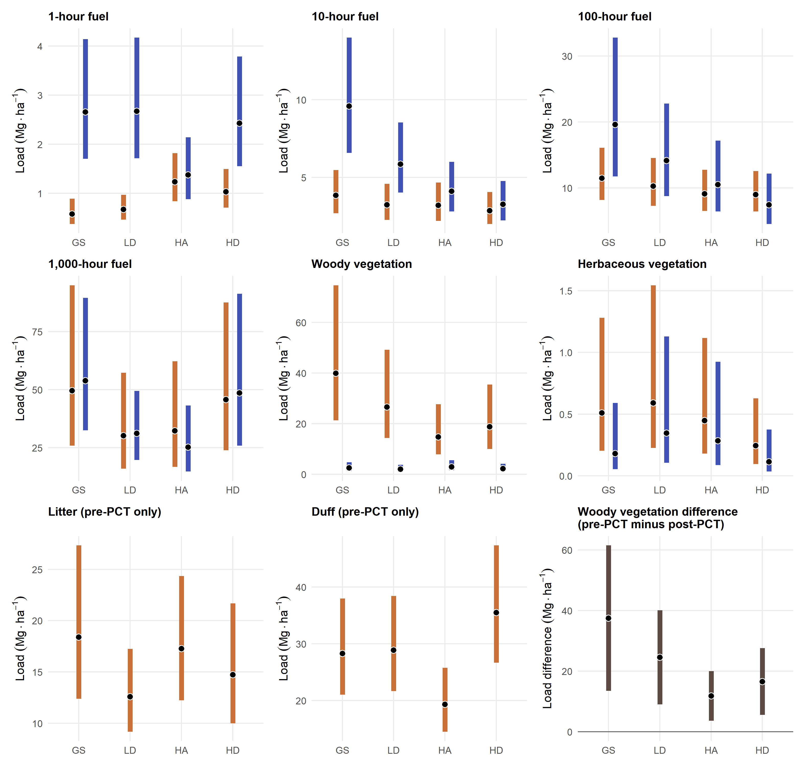

RD04 — fuel phase and PCT display
Status: Figure complete; companion table pending review. Working target: Nine-panel figure, estimates table, and CSV.
This page owns fuel prediction and inference decisions, the figure and companion table, their source/output review, and the history of replaced display code. See the fuel pipeline map for the complete sequence.
The figure has been generated from the current AIC-leading fitted publication models. Its position in the register is an organizational sequence, not a required execution order relative to RD02 or RD03.
The prediction and interpretation review below now compares the thesis and RD04 estimands, demonstrates both prediction implementations, and records the Methods wording. The figure now uses random-effect-integrated mean loads throughout and the joint woody phase model for the displayed pre-minus-post mean change. The completed display and its model assumptions are recorded below.
Objective
Produce a compact, reviewable full-inventory figure (and caption) from the current AIC-leading fitted publication models. Use nine panels: paired pre-/ post-PCT estimates for 1-, 10-, 100-, and 1,000-hour fuels plus woody and herbaceous vegetation; pre-PCT-only panels for litter and duff; and a separate matched woody-vegetation-difference panel (pre-PCT minus post-PCT). The figure must retain uncertainty, retained-overstory treatment context, and the qualified interpretation of the vegetation-difference estimand.
Constraints and starting material
The upstream F01 record supplies component definitions, saved fitted-model candidates, diagnostics, and provisional leaders. RD04 consumes these artifacts; changes to their derivation or fitting belong in F01.
- Use the saved fitted models identified as AIC leaders in the F01 model-selection register. Their diagnostic/scientific review remains visible through the figure-review decision rather than blocking draft generation.
- Integrate over all fitted random effects for a consistent mean-load interpretation, with equal study-site weights. Derive woody mean change from the same joint phase model as the woody load panels, retaining its pre/post covariance.
- Retain the thesis visual grammar—model estimate point with a colored 95% CI range—for the six paired panels. Label pre-PCT-only litter and duff panels explicitly; do not imply a post-PCT zero or estimate.
- Plot the matched woody vegetation difference separately with a zero reference line. It is an inferred potential surface-fuel contribution, not direct slash load, so it must not be styled as another phase estimate.
- Use panel-specific y-scales and a 3 × 3 layout to keep the broad load range legible. Keep full model registries, diagnostics, and pairwise comparisons in linked artifacts rather than adding them to the figure.
Suggested deliverables
- A nine-panel model-estimate figure: six paired phase panels, litter, duff, and the matched woody vegetation-difference panel.
- A publication caption and a short Results paragraph, both marked Pending review when draft-ready.
- A linked table or CSV of complete phase-by-treatment model estimates and a link to the model-selection register used for the draft.
Completed output
Publication execution
RD04 inference, audits and display generation use the sole publication environment: R 4.6.2 with publication/renv.lock. The canonical figure, estimates, saved models and producing provenance are under publication/outputs/fuel/. The scripts retain their prediction, gradient, integration and covariance verification checks. Model assumptions and final display decisions remain under their existing scientific review states.
Historical thesis reference calculations belong to the separate thesis export operation. Publication consumes those exported reference values; it has no previous-environment replay or retained migration acceptance/difference artifacts.
Generated artifacts for this review are publication/outputs/fuel/figures/rd04-fuel-phase-pct-inventory.png, publication/outputs/fuel/tables/rd04-fuel-model-estimates.csv, and publication/outputs/fuel/manifests/rd04-figure-provenance.yml. The figure uses the AIC-leading models documented in the F01 model-review register. It is also available in the working manuscript for review in context.
Companion estimates table — pending review
The table below reformats all 60 displayed estimates and their existing 95% confidence intervals into 15 component–phase rows, with treatments in the same order as the figure. It reads the figure’s canonical model-estimate CSV directly; no models or intervals are recalculated. The same table is included in the manuscript supplement. It is a candidate appendix table; final placement remains a review decision.
| Component | Phase | GS | LD | HA | HD |
|---|---|---|---|---|---|
| 1-hour fuel | Pre-PCT | 0.58 (0.38, 0.89) | 0.67 (0.47, 0.97) | 1.24 (0.84, 1.82) | 1.03 (0.71, 1.50) |
| 1-hour fuel | Post-PCT | 2.66 (1.71, 4.14) | 2.67 (1.71, 4.17) | 1.37 (0.88, 2.14) | 2.42 (1.55, 3.78) |
| 10-hour fuel | Pre-PCT | 3.83 (2.68, 5.48) | 3.23 (2.27, 4.58) | 3.20 (2.19, 4.66) | 2.85 (2.00, 4.05) |
| 10-hour fuel | Post-PCT | 9.59 (6.57, 13.99) | 5.86 (4.02, 8.53) | 4.10 (2.81, 6.00) | 3.27 (2.24, 4.77) |
| 100-hour fuel | Pre-PCT | 11.48 (8.19, 16.08) | 10.30 (7.31, 14.54) | 9.14 (6.55, 12.77) | 9.01 (6.45, 12.58) |
| 100-hour fuel | Post-PCT | 19.64 (11.77, 32.78) | 14.16 (8.79, 22.82) | 10.51 (6.43, 17.18) | 7.45 (4.56, 12.18) |
| 1,000-hour fuel | Pre-PCT | 49.60 (25.88, 95.04) | 30.22 (15.94, 57.30) | 32.31 (16.76, 62.27) | 45.76 (23.90, 87.62) |
| 1,000-hour fuel | Post-PCT | 53.93 (32.47, 89.57) | 31.21 (19.69, 49.45) | 25.23 (14.74, 43.21) | 48.60 (25.83, 91.42) |
| Woody vegetation | Pre-PCT | 39.90 (21.32, 74.67) | 26.53 (14.31, 49.19) | 14.73 (7.84, 27.66) | 18.76 (9.94, 35.39) |
| Woody vegetation | Post-PCT | 2.46 (1.29, 4.68) | 2.01 (1.08, 3.74) | 2.92 (1.55, 5.52) | 2.20 (1.17, 4.13) |
| Herbaceous vegetation | Pre-PCT | 0.51 (0.20, 1.28) | 0.59 (0.23, 1.54) | 0.45 (0.18, 1.12) | 0.24 (0.10, 0.63) |
| Herbaceous vegetation | Post-PCT | 0.18 (0.05, 0.59) | 0.35 (0.11, 1.13) | 0.28 (0.09, 0.92) | 0.11 (0.04, 0.37) |
| Litter | Pre-PCT | 18.41 (12.40, 27.32) | 12.58 (9.19, 17.24) | 17.27 (12.24, 24.35) | 14.73 (10.01, 21.68) |
| Duff | Pre-PCT | 28.27 (21.02, 38.00) | 28.85 (21.65, 38.44) | 19.31 (14.48, 25.76) | 35.52 (26.65, 47.35) |
| Woody standing-vegetation reduction | Pre minus post | 37.44 (13.45, 61.44) | 24.53 (9.01, 40.04) | 11.80 (3.61, 20.00) | 16.56 (5.53, 27.60) |
Prediction and interpretation review
Implemented approach: use study-standardized, population-averaged expected loads as the baseline for mean fuel loading in comparable systems. Integrate over the fitted random-intercept distributions and include modeled zeros, with equal weights for the four study-site contexts. Retain the historical zero-random-effect predictions as a clearly labeled reference/sensitivity summary in the audit. RD04 now uses this integrated interpretation throughout, with woody mean change derived from the joint phase model; the fitted load models remain provisional pending scientific review. The original generator has been retired in favor of 08-generate-rd04-integrated-figure.R.
What the prediction arguments actually do
| Calculation | Quantity estimated | Appropriate interpretation |
|---|---|---|
re.form = NULL with known grouping IDs |
Expected response conditional on fitted random effects for those sites, blocks, corners, and transects | Conditions in the sampled units; average over an explicitly weighted set of these units if that is the target |
re.form = NA (or ~0) |
Expected response with all random effects set to zero | A reference at the center of the latent random-effect distribution |
re.form = NULL, with selected random-only grouping variables set to NA in newdata |
Retains known-group effects for the remaining grouping variables and sets the selected groups’ effects to zero | A conditional reference, e.g., a known site with zero lower-level effects |
| Integrate expected responses over the fitted random-effect distribution | Arithmetic expected load for a population of exchangeable sampling units | The model-based mean-load baseline used in RD04 |
marginaleffects passes the random-effect arguments to the fitted model’s prediction method. Its by argument and avg_predictions() average the predictions supplied to them; they do not change zero-effect predictions into random-effect-integrated predictions. This distinction follows the mixed-model vignette, the prediction reference, and the distinction between observed-group averaging and new-group integration in the Bayesian vignette.
For glmmTMB, arbitrary formulas selecting random effects in re.form are not supported. Selected grouping variables can instead be set to NA, but this is unsuitable when a variable is also required as a fixed predictor: site, for example, must remain defined for the post-PCT 100-hour model’s zero component. allow.new.levels = TRUE permits new grouping IDs; it does not request integration over their possible effects. See the model’s prediction documentation.
Two different uses of “conditional” also need separating: type = "conditional" requests the conditional-distribution mean, whereas re.form controls conditioning on random effects. For these zero-inflated Gamma models, type = "response" returns \((1-p_0)\mu_+\), including the modeled probability of zero, while type = "conditional" returns \(\mu_+\). Dispersion parameters affect variability and estimation but are not additional multipliers of this response mean. Gamma sampling variability should not receive a lognormal residual-variance correction.
Alignment of the thesis code and interpretation
The controlling Results function is marginaleffects_to_emmeans() in analysis/thesis/results.qmd: both predictions and comparisons use re.form = NA. For fuel loads, its pre- and post-PCT calls use tidyr::expand(data, treatment, site), giving equal site weights. Passing the predictions and pairwise-difference standard errors into emmeans::emmobj() changes their representation, not their underlying estimand. The earlier re.form = NULL exploratory basal-area plots in regen_visualize.qmd are not the calls controlling the thesis Results.
| Thesis statement or presentation | Assessment |
|---|---|
| Methods: predictions incorporate all components and average over random effects to obtain population means | Partly aligned: response predictions can include the zero component, but the wrapper sets random effects to zero before averaging. The random effects were not integrated out. |
| Methods: estimates apply to equal proportions of similar sites, specifically north- and south-facing aspects | Equal site weights are explicit for fuel grids. Zeroing site random effects does not reproduce an aspect mixture on a nonlinear response scale; aspect was not a fixed adjustment variable. Transport requires an exchangeability assumption beyond the prediction settings. |
| Fuel Results: “expected value” and “estimated marginal means” | Valid if identified as site-standardized expectations at zero random effects. Too broad if read as arithmetic population-average loads across forest heterogeneity. |
| Discussion: compare “average” loads with other forest studies | State whether each value is an observed mean, a zero-effect reference, or an integrated model mean, and check component definitions and sampling protocols. These quantities are not interchangeable. |
| Post-PCT caption: vegetation difference “represents slash fuels recruited to the forest floor” | Overstates the measurement: standing-vegetation reduction is an inferred potential contribution, not measured slash deposition. RD04’s qualified caption is better aligned. |
| Results: pre/post estimates are not statistically comparable because model structures differ | Different structures alone do not prevent comparison. Formal phase differences need an explicit common estimand and their covariance, accounting for pairing. Separate phase CIs do not supply a paired change test. |
| Discussion/conclusions: PCT “resulted in” or “generated” the observed dead-fuel changes | The observed transition supports association; attributing all change to PCT requires the design/time assumptions. No unthinned contemporaneous comparison is used by these predictions. |
The same wrapper controls regeneration and sprout Results. Basal area, Douglas-fir counts, and year-10 height use nonlinear links, so zero-effect and integrated means can differ there too. Height increment uses an identity link; integration over mean-zero random effects leaves its expected value unchanged, for a fixed covariate distribution. The Results grids also vary: treatment height-increment summaries explicitly balance years, whereas the by-year analysis uses newdata = NULL and averages within observed species/year cells. Those are different standardization choices and should be described separately. The fuel integration code below is deliberately restricted to its audited model structures; it is not a general-purpose replacement for those other analyses.
One numerical provenance issue also deserves attention: the Discussion reports about 42 Mg/ha of pre-PCT 1,000-hour fuel. Reproducing the Results wrapper on the saved thesis models gives an equal-treatment reference mean of 32.63 Mg/ha. The Discussion value may be an observed summary, but it should not be presented as the grand mean of these particular model predictions without a separate source. The audit preserves all reproduced thesis fuel estimates.
How RD04 compares with the thesis
The original RD04 and thesis fuel Results used the same zero-random-effect target and equal-site weighting. Both used valid prediction grids: the thesis expanded the observed treatment and site levels, and RD04 retained observed rows with valid nested identifiers, one per site/treatment/phase. Neither approach introduced a grid discrepancy for these zero-effect predictions. The updated RD04 retains equal-site weighting and integrates over random effects. Every phase-specific mean averages four site contexts; post-PCT 100-hour fuel additionally retains fixed site effects in its zero component.
Numerical changes from the thesis to the original RD04 arose from revised fitted models and component definitions, not a switch from marginaleffects to custom prediction. The updated figure also changes the estimand by integrating over random effects. The directly comparable deadwood example below separates these changes. Values are Mg/ha, GS treatment.
| Component | Phase | Thesis reference | Original RD04 reference | Current integrated mean |
|---|---|---|---|---|
| 1-hour | prepct | 0.54 | 0.55 | 0.58 |
| 1-hour | postpct | 2.55 | 2.45 | 2.66 |
| 10-hour | prepct | 3.68 | 3.69 | 3.83 |
| 10-hour | postpct | 8.69 | 8.69 | 9.59 |
| 100-hour | prepct | 11.10 | 11.10 | 11.48 |
| 100-hour | postpct | 17.92 | 16.68 | 19.64 |
| 1,000-hour | prepct | 41.01 | 41.01 | 49.60 |
| 1,000-hour | postpct | 43.13 | 47.21 | 53.93 |
Combined thesis vegetation and forest-floor estimates do not directly match the new woody/herbaceous and litter/duff components.
Implemented target and worked demonstration
For a treatment \(t\), phase \(h\), and equally weighted site contexts \(s\), define
\[ M_{th} = \frac{1}{4}\sum_{s=1}^{4} E_b\!\left[(1-p_{0,sth})\exp\{x_{sth}^{\mathsf T}\beta + z^{\mathsf T}b\}\right]. \]
The audited load models have independent Gaussian random intercepts only in the conditional model and no random effects in the zero component. Thus, with \(v=\sum_k\sigma_k^2\) across all modeled random-intercept levels,
\[ M_{th}=\exp(v/2)\, \frac{1}{4}\sum_{s=1}^{4}(1-p_{0,sth})\exp(x_{sth}^{\mathsf T}\beta). \]
This is exact under the fitted model, not a generic bias-correction option. The same multiplier across treatments within a fitted load model preserves ratios and rankings, while changing absolute loads and differences. Inference must still propagate uncertainty in the multiplier; old p-values and standard errors should not simply be carried over.
The separate Student-t difference model was replaced in the display by the integrated joint phase-model contrast so that woody change equals the difference between the displayed arithmetic mean loads. Its uncertainty retains the joint pre/post covariance, keeping the change estimate consistent with the matched design and the mean-load interpretation of the other panels.
For post-PCT 100-hour fuel, “site-standardized” specifically retains an equal mixture of the four fitted zero-process site contexts. Integration of the random intercepts cannot create a zero-process coefficient for a fifth site. The baseline therefore concerns comparable contexts, not a fitted prediction for any arbitrary new forest. Four sites also provide limited information about the site-variance distribution. A regional mean, or an explicitly 50:50 aspect-standardized mean, would need a justified target distribution and sufficient covariate information to support that standardization.
The demonstration holds fitted load models fixed and changes the estimand; woody change now uses their joint phase model. Selected GS examples below show why the distinction matters (Mg/ha). The intervals describe uncertainty in the integrated mean, not variation in a new forest or transect.
| Component | Phase | Zero-effect reference | Integrated mean | 95% lower | 95% upper |
|---|---|---|---|---|---|
| 100-hour | postpct | 16.68 | 19.64 | 11.77 | 32.78 |
| Herbaceous vegetation | prepct | 0.22 | 0.51 | 0.20 | 1.28 |
| Herbaceous vegetation | postpct | 0.09 | 0.18 | 0.05 | 0.59 |
| Woody vegetation | prepct | 30.03 | 39.90 | 21.32 | 74.67 |
| Woody vegetation | postpct | 1.85 | 2.46 | 1.29 | 4.68 |
The implementation in 07-audit-rd04-inference.R demonstrates both routes:
- Historical reference target:
marginaleffects::avg_predictions(model, newdata = grid, by = ..., type = "response", re.form = NA)agrees withpredict()followed by explicit matrix averaging. The custom variance isA %*% prediction$cov.fit %*% t(A). - Implemented integrated target: a nonlinear functional supplied to
marginaleffects::hypotheses()averages the response means after analytic integration. A separate custom implementation derives its gradient and calculatesG %*% V %*% t(G). Both use the full covariance of the fitted nonrandom parameters, including zero-model coefficients, log random-effect standard deviations, and their cross-covariances. Merely multiplying anavg_predictions()interval byexp(v/2)would omit uncertainty in \(v\).
The hypotheses documentation supports nonlinear functionals and supplied covariance matrices. Here the full parameter table is supplied explicitly because ordinary fixed-coefficient prediction covariance alone does not include the integration multiplier’s variance. These are asymptotic delta-method intervals, conditional on the chosen models and the reference grid. They do not include model-selection or fuel-component-derivation uncertainty. Refitted parametric bootstrap intervals are a useful final sensitivity check, particularly for herbaceous loads with large variance corrections and only four sites.
Verification: the audit checks all 60 historical comparison cells for agreement of reference point estimates and SEs, integrated point estimates, and integrated SEs; the latter agree within a relative/absolute tolerance of \(10^{-4}\). It checks the integration multiplier against numerical quadrature, the matrix predictions against predict.glmmTMB(), and the retired script’s checksum before and after the run. It additionally verifies all four woody mean contrasts with cross-phase covariance and reproduces the 48 thesis fuel reference estimates. Outputs and the R/package session record are in publication/outputs/fuel/inference-audit/.
Methods wording
For the implemented population-average baseline:
We estimated treatment- and phase-specific mean fuel loads by averaging response-scale expectations, including modeled zeros, over an equally weighted grid of the four study-site contexts and analytically integrating over all fitted Gaussian random-intercept distributions. These estimates provide model-based reference means for comparable forest conditions; 95% confidence intervals were calculated using the delta method with the full parameter covariance, including uncertainty in random-effect variances.
The matched-contrast qualification can be stated in its own Methods sentence:
Mean woody standing-vegetation reduction was estimated as the pre-PCT minus post-PCT contrast from the matched repeated-phase model, with its joint covariance, and interpreted as a potential surface-fuel contribution.
The former figure-and-table plan has been merged into this task; this is the authoritative action record for fuel-display development.
Implications, handoff, and review state
RT03 consumes rd04-fuel-model-estimates.csv for narrative values and records its claim-level wording decisions. M03 will adapt the Methods wording in the inference review when its queued work begins. Both should link back here for the estimand and interval rationale. A change to prediction or uncertainty requires updating this record and regenerating the figure/CSV before reviewing dependent narrative claims.
Acceptance requires a consistent mean-load interpretation across panels, traceability from all 60 estimates to the saved models, preservation of woody pre/post covariance, and captions that distinguish potential contribution from measured slash and causal PCT effects. The figure is complete; scientific model assumptions and final table placement remain under review. The archived stage 06 implementation documents the superseded display, not the current inference target.
Inference and display code and outputs
This section is the authoritative source review for RD04 prediction, inference, and display implementation. It reads the original scripts and saved CSVs on every render. The F01 analytical record owns the upstream component derivation and fitted-model candidates; the fuel pipeline map shows their dependencies.
Complete RD04 scripts
Stage 07 audits inference; stage 08 generates the current integrated-mean figure and estimates. Their shared inference functions are included here. Stage 06 and its archived implementation are retained as historical evidence.
06-generate-rd04-figure.R — retired entry point
# Retired entry point. The historical implementation is retained only for audit.
stop("This generator is retired. Run Rscript scripts/fuel/08-generate-rd04-integrated-figure.R from publication/ instead.", call. = FALSE)
07-audit-rd04-inference.R
# Read-only audit of the fitted RD04 models and thesis fuel predictions.
# Run from publication/: Rscript scripts/fuel/07-audit-rd04-inference.R
# Historical zero-effect estimates are read from the retired generator.
script_argument <- grep("^--file=", commandArgs(FALSE), value = TRUE)
stopifnot(length(script_argument) == 1L)
script_dir <- dirname(normalizePath(sub("^--file=", "", script_argument)))
publication_root <- normalizePath(file.path(script_dir, "..", ".."))
source(file.path(publication_root, "scripts", "publication-paths.R"))
paths_common <- publication_paths(publication_root)
suppressPackageStartupMessages({
library(dplyr)
library(glmmTMB)
library(marginaleffects)
library(readr)
library(tidyr)
})
models_dir <- file.path(paths_common$output, "fuel/models")
audit_dir <- file.path(paths_common$output, "fuel/inference-audit")
dir.create(audit_dir, recursive = TRUE, showWarnings = FALSE)
# Evaluate only these two definitions, never the original script's output steps.
original_script <- file.path(script_dir, "retired", "06-generate-rd04-figure.R")
original_hash <- tools::md5sum(original_script)
for (expr in parse(original_script)) {
if (is.call(expr) && identical(expr[[1]], as.name("<-")) && is.symbol(expr[[2]]) &&
as.character(expr[[2]]) %in% c("model_ids", "model_estimates")) eval(expr)
}
source(file.path(script_dir, "rd04-inference-utils.R"))
spec <- tibble(
key = names(model_ids), model_id = unname(model_ids),
component = c("1-hour", "1-hour", "10-hour", "10-hour", "100-hour", "100-hour",
"1,000-hour", "1,000-hour", "Woody vegetation", "Herbaceous vegetation",
"Herbaceous vegetation", "Litter", "Duff", "Woody difference"),
phase = c(rep(c("prepct", "postpct"), 4), NA, "prepct", "postpct", "prepct", "prepct", NA)
)
spec <- bind_rows(filter(spec, key != "woody_phase"),
mutate(filter(spec, key == "woody_phase"), phase = "prepct"),
mutate(filter(spec, key == "woody_phase"), phase = "postpct"))
audit <- list()
structures <- list()
for (i in seq_len(nrow(spec))) {
item <- spec[i, ]
message("Auditing ", item$model_id, " ", item$phase)
model <- readRDS(file.path(models_dir, paste0(item$model_id, ".rds")))
phase_arg <- if (is.na(item$phase)) NULL else item$phase
grid <- reference_grid(model, phase_arg)
avg <- averaging_matrix(grid)
reference <- custom_reference(model, grid)
me <- as.data.frame(avg_predictions(model, newdata = grid, type = "response",
by = intersect(c("treatment", "phase"), names(grid)),
re.form = NA, allow.new.levels = TRUE))
me <- me[match(as.character(reference$treatment), as.character(me$treatment)), ]
legacy <- model_estimates(item$model_id, item$component, phase_arg,
difference = item$key == "woody_difference")
legacy <- legacy[match(as.character(reference$treatment), as.character(legacy$treatment)), ]
s <- integration_setup(model, grid)
integrated <- custom_integrated(s)
me_integrated <- as.data.frame(marginaleffects_integrated(s))
stopifnot(max(abs(reference$estimate - me$estimate)) < 1e-6,
max(abs(reference$std.error - me$std.error) / pmax(1, reference$std.error)) < 1e-4,
max(abs(reference$estimate - legacy$estimate)) < 1e-6,
max(abs(integrated$estimate - me_integrated$estimate)) < 1e-6,
max(abs(integrated$se - me_integrated$std.error) / pmax(1, integrated$se)) < 1e-4)
# Verify integration at a point using numerical quadrature, independently of
# the closed-form exp(v/2) calculation (including near-zero variances).
if (s$link == "log") {
quadrature <- integrate(function(z) exp(sqrt(s$variance) * z) * dnorm(z),
lower = -12, upper = 12, rel.tol = 1e-9)$value
stopifnot(abs(quadrature - exp(s$variance / 2)) < 1e-7)
}
# Check matrix construction against the model's own predict implementation.
row0 <- if (s$link == "log") exp(drop(s$X %*% s$par[s$ib])) else drop(s$X %*% s$par[s$ib])
if (length(s$iz)) row0 <- row0 * (1 - plogis(drop(s$Z %*% s$par[s$iz])))
stopifnot(max(abs(row0 - predict(model, grid, type = "response", re.form = NA))) < 1e-6)
# Average ALL observed rows within site, then equally across sites; retaining
# only one corner/transect per site would give an arbitrary conditional mean.
observed <- model$frame
if (!is.null(phase_arg) && "phase" %in% names(observed)) observed <- filter(observed, .data$phase == .env$phase_arg)
conditional <- observed |>
mutate(predicted = as.numeric(predict(model, observed, type = "response", re.form = NULL))) |>
group_by(across(all_of(intersect(c("site", "treatment", "phase"), names(observed))))) |>
summarise(predicted = mean(predicted), .groups = "drop") |>
group_by(across(all_of(intersect(c("treatment", "phase"), names(observed))))) |>
summarise(predicted = mean(predicted), .groups = "drop")
fitted_groups <- conditional$predicted[match(as.character(reference$treatment), as.character(conditional$treatment))]
# Marginal mean intervals: log-delta intervals stay positive without truncation;
# the signed identity-link difference uses ordinary response-scale intervals.
lcl <- if (s$link == "log") integrated$estimate * exp(-qnorm(.975) * integrated$se / integrated$estimate) else integrated$estimate - qnorm(.975) * integrated$se
ucl <- if (s$link == "log") integrated$estimate * exp(qnorm(.975) * integrated$se / integrated$estimate) else integrated$estimate + qnorm(.975) * integrated$se
audit[[i]] <- tibble(
model_id = item$model_id, component = item$component, phase = item$phase,
treatment = as.character(reference$treatment), n_sites = rowSums(avg$A > 0),
reference_custom = reference$estimate, reference_marginaleffects = me$estimate,
original_se = legacy$se, corrected_reference_se = reference$std.error,
marginaleffects_reference_se = me$std.error,
fitted_group_site_balanced_mean = fitted_groups,
random_intercept_variance = s$variance,
integration_multiplier = if (s$link == "log") exp(s$variance / 2) else 1,
integrated_custom = integrated$estimate,
integrated_marginaleffects = me_integrated$estimate,
integrated_se_custom = integrated$se,
integrated_se_marginaleffects = me_integrated$std.error,
integrated_lcl = lcl, integrated_ucl = ucl
)
structures[[i]] <- tibble(model_id = item$model_id, phase = item$phase,
conditional = deparse1(formula(model)),
zero = deparse1(formula(model, component = "zi")),
dispersion = deparse1(formula(model, component = "disp")))
}
audit <- bind_rows(audit)
write_csv(audit, file.path(audit_dir, "rd04-estimand-comparison.csv"))
structure_path <- file.path(audit_dir, "model-structures.csv")
structure_table <- as.data.frame(bind_rows(structures))
# Preserve an unchanged model inventory, including when it is open for review.
if (!file.exists(structure_path) ||
!identical(structure_table, as.data.frame(read_csv(structure_path, show_col_types = FALSE)))) {
write_csv(structure_table, structure_path)
}
# A coherent mean change uses the same repeated-phase model on both sides and
# its cross-phase covariance. Compare with the independently fitted t model.
woody <- readRDS(file.path(models_dir, paste0(model_ids[["woody_phase"]], ".rds")))
s <- integration_setup(woody, reference_grid(woody))
s <- woody_change_setup(s)
treatments <- as.character(s$avg$labels$treatment)
change <- custom_integrated(s)
change_me <- as.data.frame(marginaleffects_integrated(s))
stopifnot(max(abs(change$estimate - change_me$estimate)) < 1e-6,
max(abs(change$se - change_me$std.error) / pmax(1, change$se)) < 1e-4)
observed <- woody$frame |>
group_by(treatment, phase, site) |>
summarise(load = mean(load_mgha), .groups = "drop") |>
group_by(treatment, phase) |>
summarise(load = mean(load), .groups = "drop") |>
pivot_wider(names_from = phase, values_from = load) |>
mutate(observed_difference = prepct - postpct)
phase_change <- tibble(
treatment = treatments, phase_model_difference = change$estimate,
phase_model_difference_marginaleffects = change_me$estimate,
se_custom = change$se, se_marginaleffects = change_me$std.error,
lcl = change$estimate - qnorm(.975) * change$se,
ucl = change$estimate + qnorm(.975) * change$se
) |>
left_join(select(observed, treatment, observed_difference), by = "treatment") |>
left_join(select(filter(audit, component == "Woody difference"), treatment,
separate_t_model_difference = integrated_custom), by = "treatment")
write_csv(phase_change, file.path(audit_dir, "woody-mean-change-comparison.csv"))
# Reproduce the thesis RESULTS grid on the original saved models, without
# executing or modifying any thesis notebook or changing its fitted models.
# Historical predictions were replayed and verified in the thesis environment.
thesis_reference <- file.path(paths_common$input, "fuel/thesis-reference-reproduction.csv")
thesis_results <- read_csv(thesis_reference, show_col_types = FALSE)
stopifnot(file.copy(thesis_reference,
file.path(audit_dir, "thesis-reference-reproduction.csv"), overwrite = TRUE))
lookup <- c("1-hour" = "onehr", "10-hour" = "tenhr", "100-hour" = "hundhr", "1,000-hour" = "thoushr")
comparison <- audit |>
filter(component %in% names(lookup)) |>
mutate(thesis_class = unname(lookup[component])) |>
left_join(select(thesis_results, phase, thesis_class, treatment, thesis_reference, thesis_se),
by = c("phase", "thesis_class", "treatment")) |>
mutate(reference_change = reference_custom - thesis_reference)
write_csv(comparison, file.path(audit_dir, "thesis-rd04-deadwood-comparison.csv"))
stopifnot(identical(original_hash, tools::md5sum(original_script)))
writeLines(c("RD04 inference audit; existing fitted models; no refitting or model selection.",
paste("Original script MD5:", unname(original_hash)),
"Integrated SEs include beta, betazi, and log-SD covariance via sdr$cov.fixed.",
"Intervals describe estimated means, not new-site or new-observation predictions.",
capture.output(sessionInfo())), file.path(audit_dir, "session-info.txt"))
print(select(audit, component, phase, treatment, reference_custom, integrated_custom,
original_se, corrected_reference_se), n = Inf)
08-generate-rd04-integrated-figure.R
# Generate the RD04 inventory with a consistent integrated mean-load estimand.
# Run from publication/: Rscript scripts/fuel/08-generate-rd04-integrated-figure.R
script_argument <- grep("^--file=", commandArgs(FALSE), value = TRUE)
stopifnot(length(script_argument) == 1L)
script_dir <- dirname(normalizePath(sub("^--file=", "", script_argument)))
publication_root <- normalizePath(file.path(script_dir, "..", ".."))
source(file.path(publication_root, "scripts", "publication-paths.R"))
paths_common <- publication_paths(publication_root)
source(file.path(script_dir, "00-fuel-config.R"))
source(file.path(script_dir, "rd04-inference-utils.R"))
suppressPackageStartupMessages({
library(dplyr)
library(ggplot2)
library(glmmTMB)
library(patchwork)
library(readr)
})
paths <- publication_fuel_paths(publication_root)
models_dir <- file.path(paths$output, "models")
figures_dir <- file.path(paths$output, "figures")
tables_dir <- file.path(paths$output, "tables")
dir.create(figures_dir, recursive = TRUE, showWarnings = FALSE)
dir.create(tables_dir, recursive = TRUE, showWarnings = FALSE)
spec <- tibble::tribble(
~model_id, ~component, ~phase,
"prepct_onehr_disp_treatment", "1-hour fuel", "prepct",
"postpct_onehr_base", "1-hour fuel", "postpct",
"prepct_tenhr_base", "10-hour fuel", "prepct",
"postpct_tenhr_base", "10-hour fuel", "postpct",
"prepct_hundhr_base", "100-hour fuel", "prepct",
"postpct_hundhr_zi_treatment_site_disp_treatment_site_interaction", "100-hour fuel", "postpct",
"prepct_thoushr_base", "1,000-hour fuel", "prepct",
"postpct_thoushr_zi_treatment", "1,000-hour fuel", "postpct",
"woody_phase_zigamma_ziphase_disp1", "Woody vegetation", NA_character_,
"prepct_herbaceous_vegetation_base", "Herbaceous vegetation", "prepct",
"postpct_herbaceous_vegetation_base", "Herbaceous vegetation", "postpct",
"prepct_litter_disp_treatment", "Litter (pre-PCT only)", "prepct",
"prepct_duff_base", "Duff (pre-PCT only)", "prepct"
)
selection <- read_csv(file.path(paths$manifests, "model-selection-log.csv"), show_col_types = FALSE)
stopifnot(all(spec$model_id %in% selection$provisional_aic_leader),
all(file.exists(file.path(models_dir, paste0(spec$model_id, ".rds")))))
summarize_integrated <- function(s, component, model_id, phase = NULL, difference = FALSE) {
prediction <- custom_integrated(s)
# Means use log-delta intervals; signed differences use response-scale ones.
low <- if (difference) prediction$estimate - qnorm(.975) * prediction$se else
prediction$estimate * exp(-qnorm(.975) * prediction$se / prediction$estimate)
high <- if (difference) prediction$estimate + qnorm(.975) * prediction$se else
prediction$estimate * exp(qnorm(.975) * prediction$se / prediction$estimate)
labels <- s$avg$labels
phase_values <- if (difference) rep("Vegetation difference", nrow(labels)) else {
values <- if ("phase" %in% names(labels)) as.character(labels$phase) else rep(phase, nrow(labels))
stopifnot(all(values %in% c("prepct", "postpct")))
ifelse(values == "prepct", "Pre-PCT", "Post-PCT")
}
tibble(component = component, phase = phase_values,
treatment = as.character(labels$treatment), estimate = prediction$estimate,
se = prediction$se, lcl = low, ucl = high, model_id = model_id,
estimand = if (difference) "integrated matched woody mean difference (pre-PCT minus post-PCT)" else
"site-standardized random-effect-integrated expected load",
interval_method = if (difference) "response-scale delta method with joint phase covariance" else
"log-scale delta method for integrated mean",
random_intercept_variance = s$variance)
}
phase_estimates <- list()
for (i in seq_len(nrow(spec))) {
item <- spec[i, ]
model <- readRDS(file.path(models_dir, paste0(item$model_id, ".rds")))
phase_arg <- if (is.na(item$phase)) NULL else item$phase
s <- integration_setup(model, reference_grid(model, phase_arg))
stopifnot(all(rowSums(s$avg$A > 0) == 4L))
phase_estimates[[i]] <- summarize_integrated(s, item$component, item$model_id, phase_arg)
if (item$component == "Woody vegetation") {
difference_component <- summarize_integrated(
woody_change_setup(s), "Woody vegetation difference (pre-PCT minus post-PCT)",
item$model_id, difference = TRUE)
}
}
estimates <- bind_rows(bind_rows(phase_estimates), difference_component) |>
mutate(
treatment = factor(treatment, levels = c("gs", "ld", "ha", "hd")),
phase = factor(phase, levels = c("Pre-PCT", "Post-PCT", "Vegetation difference")),
component = factor(component, levels = c(
"1-hour fuel", "10-hour fuel", "100-hour fuel", "1,000-hour fuel",
"Woody vegetation", "Herbaceous vegetation", "Litter (pre-PCT only)",
"Duff (pre-PCT only)", "Woody vegetation difference (pre-PCT minus post-PCT)"))
) |>
arrange(component, phase, treatment)
stopifnot(nrow(estimates) == 60L, all(is.finite(estimates$estimate)),
all(is.finite(estimates$se)), all(estimates$se >= 0),
all(estimates$lcl <= estimates$estimate), all(estimates$ucl >= estimates$estimate))
# Every displayed woody change must equal the plotted pre-minus-post means.
woody_means <- filter(estimates, component == "Woody vegetation")
for (trt in levels(estimates$treatment)) {
pre <- filter(woody_means, treatment == trt, phase == "Pre-PCT")$estimate
post <- filter(woody_means, treatment == trt, phase == "Post-PCT")$estimate
delta <- filter(difference_component, treatment == trt)$estimate
stopifnot(abs(pre - post - delta) < 1e-8)
}
write_csv(estimates, file.path(tables_dir, "rd04-fuel-model-estimates.csv"))
difference_component <- filter(estimates, phase == "Vegetation difference")
phase_colors <- c("Pre-PCT" = "#C96F38", "Post-PCT" = "#3F51B5")
phase_position <- position_dodge(width = 0.52)
phase_panel <- function(component_name) {
data <- filter(estimates, .data$component == .env$component_name)
ggplot(data, aes(x = treatment, y = estimate, ymin = lcl, ymax = ucl, color = phase, group = phase)) +
geom_linerange(linewidth = 2.2, position = phase_position) +
geom_point(shape = 21, fill = "black", color = "white", size = 2.5, stroke = 0.6, position = phase_position) +
scale_color_manual(values = phase_colors, drop = FALSE) +
scale_x_discrete(labels = c(gs = "GS", ld = "LD", ha = "HA", hd = "HD")) +
labs(title = component_name, x = NULL, y = expression(Load ~ (Mg %.% ha^-1))) +
theme_minimal(base_size = 11) +
theme(
plot.title = element_text(face = "bold", size = 11),
panel.grid.minor = element_blank(),
legend.position = "none"
)
}
difference_panel <- function() {
data <- difference_component
ggplot(data, aes(x = treatment, y = estimate, ymin = lcl, ymax = ucl)) +
geom_hline(yintercept = 0, color = "gray45", linewidth = 0.45) +
geom_linerange(color = "#5A4A42", linewidth = 2.2) +
geom_point(shape = 21, fill = "black", color = "white", size = 2.5, stroke = 0.6) +
scale_x_discrete(labels = c(gs = "GS", ld = "LD", ha = "HA", hd = "HD")) +
labs(
title = "Woody vegetation difference\n(pre-PCT minus post-PCT)",
x = NULL,
y = expression(Load ~ difference ~ (Mg %.% ha^-1))
) +
theme_minimal(base_size = 11) +
theme(plot.title = element_text(face = "bold", size = 11), panel.grid.minor = element_blank())
}
component_order <- levels(estimates$component)
plots <- lapply(component_order[1:8], phase_panel)
plots[[9]] <- difference_panel()
figure <- wrap_plots(plots, ncol = 3, guides = "collect") +
plot_layout(guides = "collect")
ggsave(file.path(figures_dir, "rd04-fuel-phase-pct-inventory.png"), figure, width = 10.5, height = 10, dpi = 300, bg = "white")
# The analysis output above is canonical. A byte-identical site asset makes the
# current review figure available in the rendered Quarto website without asking
# the published site to reach outside its output directory.
site_assets_dir <- paths_common$assets
dir.create(site_assets_dir, recursive = TRUE, showWarnings = FALSE)
file.copy(
file.path(figures_dir, "rd04-fuel-phase-pct-inventory.png"),
file.path(site_assets_dir, "rd04-fuel-phase-pct-inventory.png"),
overwrite = TRUE
)
provenance <- c(
"task: RD04",
"generator: scripts/fuel/08-generate-rd04-integrated-figure.R",
"figure: figures/rd04-fuel-phase-pct-inventory.png",
"estimates: tables/rd04-fuel-model-estimates.csv",
"estimand: site-standardized random-effect-integrated mean load including modeled zeros",
"random_effects: analytically integrated over all fitted independent Gaussian random intercepts",
"site_averaging: equal weights for the four observed study-site contexts",
"load_intervals: 95% log-scale delta-method confidence intervals for integrated means",
"difference_intervals: 95% response-scale delta-method confidence intervals with joint pre/post covariance",
"parameter_covariance: full sdr$cov.fixed including zero-process coefficients and log random-effect SDs",
"difference_panel: integrated matched woody mean difference from the same repeated-phase model as woody load panels",
"difference_model: woody_phase_zigamma_ziphase_disp1",
"pre_pct_only: litter; duff",
paste0("model_ids: ", paste(spec$model_id, collapse = "; ")),
"selection_status: existing AIC-leading load models used for draft figure; scientific review remains pending"
)
writeLines(provenance, file.path(paths$manifests, "rd04-figure-provenance.yml"))
writeLines(c(provenance, "", capture.output(sessionInfo())),
file.path(paths$manifests, "rd04-figure-session-info.txt"))
rd04-inference-utils.R
# Keep valid nested identifiers from one observed row per site/treatment/phase.
# These identifiers do not contribute fitted random effects when re.form=NA.
reference_grid <- function(model, phase = NULL) {
keys <- intersect(c("site", "treatment", "phase"), names(model$frame))
grid <- distinct(model$frame, across(all_of(keys)), .keep_all = TRUE)
if (!is.null(phase) && "phase" %in% keys) grid <- filter(grid, .data$phase == .env$phase)
counts <- count(grid, treatment)
stopifnot(length(unique(counts$n)) == 1L)
grid
}
# A maps row predictions to equally weighted site means. A V A' retains every
# cross-site covariance; treating site predictions as independent is incorrect.
averaging_matrix <- function(grid) {
keys <- intersect(c("treatment", "phase"), names(grid))
labels <- distinct(grid, across(all_of(keys)))
A <- t(vapply(seq_len(nrow(labels)), function(i) {
keep <- Reduce(`&`, lapply(keys, function(k) grid[[k]] == labels[[k]][i]))
as.numeric(keep) / sum(keep)
}, numeric(nrow(grid))))
list(A = A, labels = labels)
}
custom_reference <- function(model, grid) {
p <- predict(model, newdata = grid, type = "response", re.form = NA,
allow.new.levels = TRUE, se.fit = TRUE, cov.fit = TRUE)
avg <- averaging_matrix(grid)
transform(avg$labels, estimate = as.vector(avg$A %*% p$fit),
std.error = sqrt(diag(avg$A %*% p$cov.fit %*% t(avg$A))))
}
# Exact integration for THESE models: independent Gaussian random intercepts in
# the conditional model, log/identity link, no random effects in the zero model.
# This deliberately fails on slopes, correlated effects, offsets, or other links.
integration_setup <- function(model, grid) {
vc <- VarCorr(model)
stopifnot(length(vc$zi) == 0L, length(vc$disp) == 0L,
all(vapply(vc$cond, function(x) identical(dim(x), c(1L, 1L)), logical(1))))
X <- model.matrix(delete.response(terms(formula(model, fixed.only = TRUE))), grid)
Z <- model.matrix(formula(model, component = "zi", fixed.only = TRUE), grid)
par <- model$fit$par
ib <- which(names(par) == "beta")
iz <- which(names(par) == "betazi")
it <- which(names(par) == "theta")
stopifnot(ncol(X) == length(ib), ncol(Z) == length(iz),
length(it) == length(vc$cond), model$sdr$pdHess,
isTRUE(all.equal(unname(par), unname(model$sdr$par.fixed))),
is.null(model.offset(model$frame)),
family(model)$link %in% c("log", "identity"))
variance <- sum(vapply(vc$cond, function(x) x[1, 1], numeric(1)))
stopifnot(isTRUE(all.equal(variance, sum(exp(2 * par[it])), tolerance = 1e-8)))
list(X = X, Z = Z, par = par, V = model$sdr$cov.fixed,
ib = ib, iz = iz, it = it, link = family(model)$link,
avg = averaging_matrix(grid), variance = variance)
}
# Independent analytic derivatives for the custom delta-method implementation.
custom_integrated <- function(s) {
eta <- drop(s$X %*% s$par[s$ib])
pzero <- if (length(s$iz)) plogis(drop(s$Z %*% s$par[s$iz])) else rep(0, length(eta))
if (s$link == "log") {
mu <- exp(eta + s$variance / 2) * (1 - pzero)
D <- matrix(0, nrow(s$X), length(s$par))
D[, s$ib] <- mu * s$X
if (length(s$iz)) D[, s$iz] <- -mu * pzero * s$Z
D[, s$it] <- outer(mu, exp(2 * s$par[s$it]))
} else {
stopifnot(length(s$iz) == 0L)
mu <- eta
D <- matrix(0, nrow(s$X), length(s$par))
D[, s$ib] <- s$X
}
G <- s$avg$A %*% D
list(estimate = drop(s$avg$A %*% mu),
se = sqrt(pmax(0, diag(G %*% s$V %*% t(G)))), G = G)
}
# Contrast the same matched model's integrated phase means, retaining their
# covariance through a single gradient and the full parameter covariance.
woody_change_setup <- function(s) {
labels <- s$avg$labels
stopifnot(all(c("phase", "treatment") %in% names(labels)),
setequal(unique(as.character(labels$phase)), c("prepct", "postpct")))
treatments <- unique(as.character(labels$treatment))
C <- t(vapply(treatments, function(trt) {
stopifnot(sum(labels$treatment == trt & labels$phase == "prepct") == 1L,
sum(labels$treatment == trt & labels$phase == "postpct") == 1L)
as.numeric(labels$treatment == trt) * ifelse(labels$phase == "prepct", 1, -1)
}, numeric(nrow(labels))))
s$avg$A <- C %*% s$avg$A
s$avg$labels <- data.frame(treatment = treatments)
s
}
# marginaleffects does the nonlinear delta method on a supplied full parameter
# table, including theta (log SDs), not just the conditional fixed coefficients.
# avg_predictions(re.form=NA) alone does NOT integrate over random effects.
marginaleffects_integrated <- function(s) {
parameters <- data.frame(term = paste0("p", seq_along(s$par)),
estimate = unname(s$par))
functional <- function(x) {
b <- x$estimate
eta <- drop(s$X %*% b[s$ib])
pzero <- if (length(s$iz)) plogis(drop(s$Z %*% b[s$iz])) else rep(0, length(eta))
mu <- if (s$link == "log") exp(eta + sum(exp(2 * b[s$it])) / 2) * (1 - pzero) else eta
data.frame(term = seq_len(nrow(s$avg$labels)), estimate = drop(s$avg$A %*% mu))
}
marginaleffects::hypotheses(parameters, hypothesis = functional, vcov = s$V,
numderiv = "fdcenter", conf_level = .95)
}
06-generate-rd04-figure.R — retired (historical implementation)
# Generate the RD04 publication figure: the full disaggregated pre-/post-PCT
# fuel inventory. This publication-only step reads saved F01 model artifacts
# and writes only below outputs/publication/fuel/.
script_argument <- grep("^--file=", commandArgs(trailingOnly = FALSE), value = TRUE)
if (length(script_argument) != 1L) stop("Run with Rscript scripts/publication/fuel/06-generate-rd04-figure.R")
script_dir <- dirname(normalizePath(sub("^--file=", "", script_argument)))
analysis_root <- normalizePath(file.path(script_dir, "..", "..", ".."))
source(file.path(script_dir, "00-fuel-config.R"))
library(dplyr)
library(ggplot2)
library(glmmTMB)
library(patchwork)
library(readr)
library(tidyr)
paths <- publication_fuel_paths(analysis_root)
output_root <- paths$output
models_dir <- file.path(output_root, "models")
figures_dir <- file.path(output_root, "figures")
tables_dir <- file.path(output_root, "tables")
dir.create(figures_dir, recursive = TRUE, showWarnings = FALSE)
dir.create(tables_dir, recursive = TRUE, showWarnings = FALSE)
selection <- read_csv(file.path(paths$manifests, "model-selection-log.csv"), show_col_types = FALSE)
model_ids <- c(
prepct_onehr = "prepct_onehr_disp_treatment",
postpct_onehr = "postpct_onehr_base",
prepct_tenhr = "prepct_tenhr_base",
postpct_tenhr = "postpct_tenhr_base",
prepct_hundhr = "prepct_hundhr_base",
postpct_hundhr = "postpct_hundhr_zi_treatment_site_disp_treatment_site_interaction",
prepct_thoushr = "prepct_thoushr_base",
postpct_thoushr = "postpct_thoushr_zi_treatment",
woody_phase = "woody_phase_zigamma_ziphase_disp1",
prepct_herbaceous = "prepct_herbaceous_vegetation_base",
postpct_herbaceous = "postpct_herbaceous_vegetation_base",
prepct_litter = "prepct_litter_disp_treatment",
prepct_duff = "prepct_duff_base",
woody_difference = "woody_delta_student_t_disp_treatment_site_interaction"
)
missing_models <- model_ids[!file.exists(file.path(models_dir, paste0(model_ids, ".rds")))]
if (length(missing_models)) stop("Missing selected model files: ", paste(missing_models, collapse = ", "))
# Predict at every observed site-by-treatment (and phase, where relevant)
# combination, excluding random effects. Average the balanced site predictions
# within each plotted treatment/phase and propagate their prediction covariance
# to retain model-based uncertainty for the displayed marginal estimate.
model_estimates <- function(model_id, component, phase = NULL, difference = FALSE) {
model <- readRDS(file.path(models_dir, paste0(model_id, ".rds")))
phase_label <- if (difference) {
"Vegetation difference"
} else if (identical(phase, "prepct")) {
"Pre-PCT"
} else {
"Post-PCT"
}
frame <- model$frame
focal <- c("treatment", if ("phase" %in% names(frame)) "phase")
grid_columns <- intersect(c("site", focal), names(frame))
grid <- frame |>
distinct(across(all_of(grid_columns)), .keep_all = TRUE)
if (!is.null(phase) && "phase" %in% names(grid)) {
grid <- filter(grid, .data$phase == .env$phase)
}
prediction <- predict(
model,
newdata = grid,
type = "response",
se.fit = TRUE,
cov.fit = TRUE,
re.form = NA,
allow.new.levels = TRUE
)
grid <- mutate(grid, estimate_site = as.numeric(prediction$fit))
group_columns <- intersect(c("treatment", "phase"), names(grid))
groups <- grid |>
mutate(row_id = row_number()) |>
group_by(across(all_of(group_columns))) |>
summarise(row_ids = list(row_id), estimate = mean(estimate_site), .groups = "drop")
groups <- groups |>
rowwise() |>
mutate(
se = sqrt(sum(prediction$cov.fit[row_ids[[1]], row_ids[[1]], drop = FALSE]) / length(row_ids[[1]])^2),
lcl = estimate - stats::qnorm(0.975) * se,
ucl = estimate + stats::qnorm(0.975) * se
) |>
ungroup() |>
mutate(
component = component,
model_id = model_id,
estimand = if (difference) "matched woody vegetation difference (pre-PCT minus post-PCT)" else "phase-specific expected load",
phase = phase_label,
lcl = if (difference) lcl else pmax(0, lcl),
treatment = factor(treatment, levels = c("gs", "ld", "ha", "hd"))
)
select(groups, component, phase, treatment, estimate, se, lcl, ucl, model_id, estimand)
}
paired_components <- bind_rows(
model_estimates(model_ids[["prepct_onehr"]], "1-hour fuel", "prepct"),
model_estimates(model_ids[["postpct_onehr"]], "1-hour fuel", "postpct"),
model_estimates(model_ids[["prepct_tenhr"]], "10-hour fuel", "prepct"),
model_estimates(model_ids[["postpct_tenhr"]], "10-hour fuel", "postpct"),
model_estimates(model_ids[["prepct_hundhr"]], "100-hour fuel", "prepct"),
model_estimates(model_ids[["postpct_hundhr"]], "100-hour fuel", "postpct"),
model_estimates(model_ids[["prepct_thoushr"]], "1,000-hour fuel", "prepct"),
model_estimates(model_ids[["postpct_thoushr"]], "1,000-hour fuel", "postpct"),
model_estimates(model_ids[["woody_phase"]], "Woody vegetation", "prepct"),
model_estimates(model_ids[["woody_phase"]], "Woody vegetation", "postpct"),
model_estimates(model_ids[["prepct_herbaceous"]], "Herbaceous vegetation", "prepct"),
model_estimates(model_ids[["postpct_herbaceous"]], "Herbaceous vegetation", "postpct")
)
pre_only_components <- bind_rows(
model_estimates(model_ids[["prepct_litter"]], "Litter (pre-PCT only)", "prepct"),
model_estimates(model_ids[["prepct_duff"]], "Duff (pre-PCT only)", "prepct")
)
difference_component <- model_estimates(
model_ids[["woody_difference"]],
"Woody vegetation difference (pre-PCT minus post-PCT)",
difference = TRUE
)
estimates <- bind_rows(paired_components, pre_only_components, difference_component) |>
mutate(
phase = factor(phase, levels = c("Pre-PCT", "Post-PCT", "Vegetation difference")),
component = factor(component, levels = c(
"1-hour fuel", "10-hour fuel", "100-hour fuel", "1,000-hour fuel",
"Woody vegetation", "Herbaceous vegetation", "Litter (pre-PCT only)",
"Duff (pre-PCT only)", "Woody vegetation difference (pre-PCT minus post-PCT)"
))
)
write_csv(estimates, file.path(tables_dir, "rd04-fuel-model-estimates.csv"))
phase_colors <- c("Pre-PCT" = "#C96F38", "Post-PCT" = "#3F51B5")
phase_position <- position_dodge(width = 0.52)
phase_panel <- function(component_name) {
data <- filter(estimates, .data$component == .env$component_name)
ggplot(data, aes(x = treatment, y = estimate, ymin = lcl, ymax = ucl, color = phase, group = phase)) +
geom_linerange(linewidth = 2.2, position = phase_position) +
geom_point(shape = 21, fill = "black", size = 2.5, stroke = 0.6, position = phase_position) +
scale_color_manual(values = phase_colors, drop = FALSE) +
scale_x_discrete(labels = c(gs = "GS", ld = "LD", ha = "HA", hd = "HD")) +
labs(title = component_name, x = NULL, y = expression(Load ~ (Mg %.% ha^-1))) +
theme_minimal(base_size = 11) +
theme(
plot.title = element_text(face = "bold", size = 11),
panel.grid.minor = element_blank(),
legend.position = "none"
)
}
difference_panel <- function() {
data <- difference_component
ggplot(data, aes(x = treatment, y = estimate, ymin = lcl, ymax = ucl)) +
geom_hline(yintercept = 0, color = "gray45", linewidth = 0.45) +
geom_linerange(color = "#5A4A42", linewidth = 2.2) +
geom_point(shape = 21, fill = "black", size = 2.5, stroke = 0.6) +
scale_x_discrete(labels = c(gs = "GS", ld = "LD", ha = "HA", hd = "HD")) +
labs(
title = "Woody vegetation difference\n(pre-PCT minus post-PCT)",
x = NULL,
y = expression(Load ~ difference ~ (Mg %.% ha^-1))
) +
theme_minimal(base_size = 11) +
theme(plot.title = element_text(face = "bold", size = 11), panel.grid.minor = element_blank())
}
component_order <- levels(estimates$component)
plots <- lapply(component_order[1:8], phase_panel)
plots[[9]] <- difference_panel()
figure <- wrap_plots(plots, ncol = 3, guides = "collect") +
plot_layout(guides = "collect")
ggsave(file.path(figures_dir, "rd04-fuel-phase-pct-inventory.png"), figure, width = 10.5, height = 10, dpi = 300, bg = "white")
# The analysis output above is canonical. A byte-identical site asset makes the
# current review figure available in the rendered Quarto website without asking
# the published site to reach outside its output directory.
site_assets_dir <- file.path(dirname(analysis_root), "publication", "assets")
dir.create(site_assets_dir, recursive = TRUE, showWarnings = FALSE)
file.copy(
file.path(figures_dir, "rd04-fuel-phase-pct-inventory.png"),
file.path(site_assets_dir, "rd04-fuel-phase-pct-inventory.png"),
overwrite = TRUE
)
provenance <- c(
"task: RD04",
"figure: figures/rd04-fuel-phase-pct-inventory.png",
"estimates: tables/rd04-fuel-model-estimates.csv",
"intervals: 95% normal-approximation intervals propagated from prediction covariance",
"site_averaging: balanced average of population-level predictions across observed sites",
"paired_components: 1-hour; 10-hour; 100-hour; 1,000-hour; woody vegetation; herbaceous vegetation",
"pre_pct_only: litter; duff",
"difference_panel: matched woody vegetation pre-PCT minus post-PCT",
paste0("model_ids: ", paste(model_ids, collapse = "; ")),
"selection_status: AIC-leading candidates used for draft figure; scientific review remains pending"
)
writeLines(provenance, file.path(paths$manifests, "rd04-figure-provenance.yml"))
Retirement record
Retired RD04 generator
06-generate-rd04-figure.R preserves the original zero-random-effect figure implementation as a historical audit input. Do not execute it. The active generator is ../08-generate-rd04-integrated-figure.R; the old entry point stops with migration instructions. ../07-audit-rd04-inference.R reads only the archived model map and function definitions for historical comparison.
Complete RD04 CSV outputs
These tables preserve all audit and estimate cells, including saved numeric precision. The companion table above formats the same canonical estimate CSV; RT03 consumes that CSV without taking ownership of its inference decisions.
Inference audit and historical comparisons
model-structures.csv — 15 rows, 5 columns
| model_id | phase | conditional | zero | dispersion |
|---|---|---|---|---|
| prepct_onehr_disp_treatment | prepct | load_mgha ~ treatment + (1 | site) + (1 | block) + (1 | design_corner) | ~0 | ~treatment |
| postpct_onehr_base | postpct | load_mgha ~ treatment + (1 | site) + (1 | block) + (1 | design_corner) | ~1 | ~1 |
| prepct_tenhr_base | prepct | load_mgha ~ treatment + (1 | site) + (1 | block) + (1 | design_corner) | ~1 | ~1 |
| postpct_tenhr_base | postpct | load_mgha ~ treatment + (1 | site) + (1 | block) + (1 | design_corner) | ~1 | ~1 |
| prepct_hundhr_base | prepct | load_mgha ~ treatment + (1 | site) + (1 | block) + (1 | design_corner) | ~1 | ~1 |
| postpct_hundhr_zi_treatment_site_disp_treatment_site_interaction | postpct | load_mgha ~ treatment + (1 | site) + (1 | block) + (1 | design_corner) | ~treatment + site | ~treatment * site |
| prepct_thoushr_base | prepct | load_mgha ~ treatment + (1 | site) + (1 | block) + (1 | design_corner) | ~1 | ~1 |
| postpct_thoushr_zi_treatment | postpct | load_mgha ~ treatment + (1 | site) + (1 | block) + (1 | design_corner) | ~treatment | ~1 |
| prepct_herbaceous_vegetation_base | prepct | load_mgha ~ treatment + (1 | site) + (1 | block) + (1 | design_corner) | ~1 | ~1 |
| postpct_herbaceous_vegetation_base | postpct | load_mgha ~ treatment + (1 | site) + (1 | block) + (1 | design_corner) | ~1 | ~1 |
| prepct_litter_disp_treatment | prepct | load_mgha ~ treatment + (1 | site) + (1 | block) + (1 | design_corner) | ~0 | ~treatment |
| prepct_duff_base | prepct | load_mgha ~ treatment + (1 | site) + (1 | block) + (1 | design_corner) | ~1 | ~1 |
| woody_delta_student_t_disp_treatment_site_interaction | NA | woody_standing_reduction_mgha ~ treatment + (1 | site) + (1 | block) + (1 | design_corner) | ~0 | ~treatment * site |
| woody_phase_zigamma_ziphase_disp1 | prepct | load_mgha ~ phase * treatment + (1 | site) + (1 | block) + (1 | design_corner) + (1 | transect_id) | ~phase | ~1 |
| woody_phase_zigamma_ziphase_disp1 | postpct | load_mgha ~ phase * treatment + (1 | site) + (1 | block) + (1 | design_corner) + (1 | transect_id) | ~phase | ~1 |
rd04-estimand-comparison.csv — 60 rows, 19 columns
| model_id | component | phase | treatment | n_sites | reference_custom | reference_marginaleffects | original_se | corrected_reference_se | marginaleffects_reference_se | fitted_group_site_balanced_mean | random_intercept_variance | integration_multiplier | integrated_custom | integrated_marginaleffects | integrated_se_custom | integrated_se_marginaleffects | integrated_lcl | integrated_ucl |
|---|---|---|---|---|---|---|---|---|---|---|---|---|---|---|---|---|---|---|
| prepct_onehr_disp_treatment | 1-hour | prepct | gs | 4 | 0.5512455293964431 | 0.5512455293964431 | 0.12077937215819204 | 0.12077937215819204 | 0.12077937329293588 | 0.5670525263401754 | 0.10053133424450786 | 1.0515504216450342 | 0.57966246886677 | 0.57966246886677 | 0.12734491483090932 | 0.1273449135085891 | 0.37685681977389934 | 0.8916080595657315 |
| prepct_onehr_disp_treatment | 1-hour | prepct | ha | 4 | 1.1751127471580756 | 1.1751127471580756 | 0.2291362714356159 | 0.2291362714356159 | 0.2291362717163343 | 1.1818172214680789 | 0.10053133424450786 | 1.0515504216450342 | 1.235690304754529 | 1.235690304754529 | 0.24350818487415285 | 0.24350817982743106 | 0.8397881840681819 | 1.8182329285313807 |
| prepct_onehr_disp_treatment | 1-hour | prepct | hd | 4 | 0.9791948537174894 | 0.9791948537174894 | 0.1847477913307537 | 0.1847477913307537 | 0.18474779010754722 | 1.0083748021394943 | 0.10053133424450786 | 1.0515504216450342 | 1.0296727612992735 | 1.0296727612992735 | 0.19612439603770165 | 0.196124397660496 | 0.7088734261498573 | 1.4956492319371228 |
| prepct_onehr_disp_treatment | 1-hour | prepct | ld | 4 | 0.6400950959631515 | 0.6400950959631515 | 0.11826346246683112 | 0.11826346246683112 | 0.11826346597276512 | 0.6548003198226092 | 0.10053133424450786 | 1.0515504216450342 | 0.6730922680529707 | 0.6730922680529707 | 0.12581615028348334 | 0.12581615439286714 | 0.4666226378003533 | 0.9709198924603678 |
| postpct_onehr_base | 1-hour | postpct | gs | 4 | 2.4543393410384473 | 2.4543393410384473 | 0.5484609503774259 | 0.5484609503774259 | 0.548460958098882 | 2.572890329132275 | 0.15859855201292378 | 1.0825282483272602 | 2.656891667655033 | 2.656891667655033 | 0.6010387456012896 | 0.601038750693271 | 1.7053600578401404 | 4.139344827036201 |
| postpct_onehr_base | 1-hour | postpct | ha | 4 | 1.2680834819776066 | 1.2680834819776066 | 0.2813299393178817 | 0.2813299393178817 | 0.2813299427966089 | 1.322840837980027 | 0.15859855201292378 | 1.0825282483272602 | 1.3727361904779514 | 1.3727361904779511 | 0.3114841127132272 | 0.311484112763989 | 0.87991978808415094 | 2.1415641222830457 |
| postpct_onehr_base | 1-hour | postpct | hd | 4 | 2.239717036964413 | 2.239717036964413 | 0.4964341165560454 | 0.4964341165560454 | 0.4964341526358579 | 2.2790435188785727 | 0.15859855201292378 | 1.0825282483272602 | 2.424556960773808 | 2.424556960773808 | 0.550871217604665 | 0.5508712045198985 | 1.5532280736121091 | 3.7846833674374913 |
| postpct_onehr_base | 1-hour | postpct | ld | 4 | 2.4673115166852817 | 2.4673115166852817 | 0.5567702658315747 | 0.5567702658315747 | 0.5567701954823395 | 2.6306413627642096 | 0.15859855201292378 | 1.0825282483272602 | 2.670934414234994 | 2.670934414234994 | 0.6062624443000122 | 0.6062629121773581 | 1.7118003676452465 | 4.167478159242489 |
| prepct_tenhr_base | 10-hour | prepct | gs | 4 | 3.6946486783808843 | 3.6946486783808843 | 0.6675074000576872 | 0.6675074000576872 | 0.667507405240367 | 3.712467339662354 | 0.07416110316263055 | 1.0377766120185612 | 3.8342199880489685 | 3.8342199880489685 | 0.6972336723292294 | 0.6972336647683772 | 2.6846662050125185 | 5.47600401469116 |
| prepct_tenhr_base | 10-hour | prepct | ha | 4 | 3.0824067772801538 | 3.0824067772801538 | 0.607036398963131 | 0.607036398963131 | 0.6070364070571023 | 3.195477769273693 | 0.07416110316263055 | 1.0377766120185612 | 3.1988496621888487 | 3.1988496621888487 | 0.6147256876616751 | 0.6147257132612391 | 2.1949149572553686 | 4.661975229364291 |
| prepct_tenhr_base | 10-hour | prepct | hd | 4 | 2.7435864200937017 | 2.7435864200937017 | 0.4877409911869544 | 0.4877409911869544 | 0.4877409754391234 | 2.7430846443918533 | 0.07416110316263055 | 1.0377766120185612 | 2.847229819824974 | 2.847229819824974 | 0.5116917673160613 | 0.5116917685931043 | 2.001927207846791 | 4.049456751037357 |
| prepct_tenhr_base | 10-hour | prepct | ld | 4 | 3.1078693413134504 | 3.1078693413134504 | 0.5530546801049707 | 0.5530546801049707 | 0.5530546765980163 | 3.137130731856345 | 0.07416110316263055 | 1.0377766120185612 | 3.2252741156246296 | 3.2252741156246296 | 0.5787272971259781 | 0.5787272801182889 | 2.26898288462439 | 4.58460625305257 |
| postpct_tenhr_base | 10-hour | postpct | gs | 4 | 8.691842710421847 | 8.691842710421847 | 1.6383201501630724 | 1.6383201501630724 | 1.638320167895606 | 8.84222190868887 | 0.19649965886889423 | 1.1032383721007655 | 9.589174402401701 | 9.589174402401701 | 1.8486662187783556 | 1.84866622370258 | 6.571746436107066 | 13.992059281907746 |
| postpct_tenhr_base | 10-hour | postpct | ha | 4 | 3.7198989457811327 | 3.7198989457811327 | 0.708782679490655 | 0.708782679490655 | 0.708782687841537 | 3.7671079528667306 | 0.19649965886889423 | 1.1032383721007655 | 4.10393525732293 | 4.10393525732293 | 0.7938190673804839 | 0.7938190630158866 | 2.8090123605094677 | 5.995802949490601 |
| postpct_tenhr_base | 10-hour | postpct | hd | 4 | 2.9598601138559246 | 2.9598601138559246 | 0.5650902374091606 | 0.5650902374091606 | 0.5650902431829753 | 3.084338820397577 | 0.19649965886889423 | 1.1032383721007655 | 3.2654312536563967 | 3.2654312536563967 | 0.6304152099709799 | 0.6304152149083523 | 2.236711175207953 | 4.767285732081442 |
| postpct_tenhr_base | 10-hour | postpct | ld | 4 | 5.3081822183774685 | 5.3081822183774685 | 1.0121725422064771 | 1.0121725422064771 | 1.0121725461134767 | 5.685484138163862 | 0.19649965886889423 | 1.1032383721007655 | 5.856190309416989 | 5.856190309416989 | 1.123611895330907 | 1.1236118956093346 | 4.020660201664504 | 8.529684982061342 |
| prepct_hundhr_base | 100-hour | prepct | gs | 4 | 11.101813643522375 | 11.101813643522375 | 1.9082365814608562 | 1.9082365814608562 | 1.9082366141236098 | 11.133535294473123 | 0.0667440554135821 | 1.0339351202112246 | 11.47855502407792 | 11.47855502407792 | 1.9739140761108425 | 1.973914063475821 | 8.194265355120569 | 16.079199260791547 |
| prepct_hundhr_base | 100-hour | prepct | ha | 4 | 8.842460916357084 | 8.842460916357084 | 1.5112783174113849 | 1.5112783174113849 | 1.5112783807895105 | 8.93519054730936 | 0.0667440554135821 | 1.0339351202112246 | 9.142530890516717 | 9.142530890516717 | 1.5577195045739773 | 1.557719499081579 | 6.546924195265725 | 12.767197021235685 |
| prepct_hundhr_base | 100-hour | prepct | hd | 4 | 8.7112084818429 | 8.7112084818429 | 1.4832054601096532 | 1.4832054601096532 | 1.4832054483432797 | 8.777867657448772 | 0.0667440554135821 | 1.0339351202112246 | 9.006824388859279 | 9.006824388859279 | 1.535586953604482 | 1.5355870866338224 | 6.448356975754539 | 12.580396196545543 |
| prepct_hundhr_base | 100-hour | prepct | ld | 4 | 9.966280002272555 | 9.966280002272555 | 1.7487717587189633 | 1.7487717587189633 | 1.748771879632958 | 9.99624560168698 | 0.0667440554135821 | 1.0339351202112246 | 10.304486912208397 | 10.304486912208397 | 1.8085107319041331 | 1.8085109066913476 | 7.30523931897147 | 14.535109102876584 |
| postpct_hundhr_zi_treatment_site_disp_treatment_site_interaction | 100-hour | postpct | gs | 4 | 16.68420866111775 | 16.684208661117747 | 4.253667052733908 | 4.249055431716988 | 4.249055549608844 | 17.397721463246754 | 0.326014067606178 | 1.1770449687618876 | 19.638063862342158 | 19.638063862342158 | 5.133011746838471 | 5.133011765890853 | 11.765515902688579 | 32.778295099945595 |
| postpct_hundhr_zi_treatment_site_disp_treatment_site_interaction | 100-hour | postpct | ha | 4 | 8.93236184572136 | 8.93236184572136 | 2.169388136810494 | 2.195167461839186 | 2.1951675403100768 | 10.358806568100428 | 0.326014067606178 | 1.1770449687618876 | 10.513791569666976 | 10.513791569666976 | 2.6345898117053856 | 2.634589827364373 | 6.43371360673157 | 17.181338792380032 |
| postpct_hundhr_zi_treatment_site_disp_treatment_site_interaction | 100-hour | postpct | hd | 4 | 6.332125619255426 | 6.332125619255426 | 1.5472403959327439 | 1.5270874799440566 | 1.5270875120810579 | 7.008704351748384 | 0.326014067606178 | 1.1770449687618876 | 7.453196601712851 | 7.453196601712851 | 1.8682030535778382 | 1.8682030193235986 | 4.560181570981748 | 12.181563106449897 |
| postpct_hundhr_zi_treatment_site_disp_treatment_site_interaction | 100-hour | postpct | ld | 4 | 12.03349515687682 | 12.033495156876821 | 2.9127476655448765 | 2.8826272113880216 | 2.8826286477931338 | 14.129732885399726 | 0.326014067606178 | 1.1770449687618876 | 14.163964931022402 | 14.163964931022402 | 3.4455019860079075 | 3.4455016641537832 | 8.792715174072761 | 22.816376806881916 |
| prepct_thoushr_base | 1,000-hour | prepct | gs | 4 | 41.00756595813084 | 41.00756595813084 | 13.177704918652932 | 13.177704918652932 | 13.17770523757269 | 39.66328419219947 | 0.38043440616915974 | 1.2095122789264479 | 49.599154555245455 | 49.599154555245455 | 16.45841628925223 | 16.458416025228246 | 25.883397799614787 | 95.04455912784906 |
| prepct_thoushr_base | 1,000-hour | prepct | ha | 4 | 26.71125321856316 | 26.71125321856316 | 9.116975398655006 | 9.116975398655006 | 9.116975415639024 | 31.70534498735174 | 0.38043440616915974 | 1.2095122789264479 | 32.30758875336575 | 32.30758875336575 | 10.817127666469473 | 10.817128136440962 | 16.76130616168427 | 62.273207170611116 |
| prepct_thoushr_base | 1,000-hour | prepct | hd | 4 | 37.83508557684549 | 37.83508557684549 | 12.31815069366047 | 12.31815069366047 | 12.318148985962358 | 36.744318771554376 | 0.38043440616915974 | 1.2095122789264479 | 45.76200057942755 | 45.76200057942755 | 15.165199258927473 | 15.165200077257202 | 23.90137616111219 | 87.61674151795287 |
| prepct_thoushr_base | 1,000-hour | prepct | ld | 4 | 24.985765898259626 | 24.985765898259626 | 8.16667386662258 | 8.16667386662258 | 8.166673805773897 | 26.902632593426333 | 0.38043440616915974 | 1.2095122789264479 | 30.220590652326724 | 30.220590652326724 | 9.865480664187437 | 9.865480661051933 | 15.937826030075144 | 57.30292811906113 |
| postpct_thoushr_zi_treatment | 1,000-hour | postpct | gs | 4 | 47.214700192778686 | 47.214700192778686 | 11.851233433840898 | 11.851233433840898 | 11.851233712344866 | 46.42337421871546 | 0.26597398990013127 | 1.142235143409223 | 53.93028984572202 | 53.93028984572202 | 13.960458727495642 | 13.960458859827968 | 32.4705551912584 | 89.57272660452068 |
| postpct_thoushr_zi_treatment | 1,000-hour | postpct | ha | 4 | 22.092356841230828 | 22.092356841230828 | 6.290888078537867 | 6.290888078537867 | 6.290888234907455 | 23.349247491336403 | 0.26597398990013127 | 1.142235143409223 | 25.234666384791034 | 25.234666384791034 | 6.9246651739955745 | 6.924664851925283 | 14.737325129904752 | 43.20922432928764 |
| postpct_thoushr_zi_treatment | 1,000-hour | postpct | hd | 4 | 42.54560072954759 | 42.54560072954759 | 13.435706523040666 | 13.435706523040666 | 13.435707467106097 | 41.90155407764094 | 0.26597398990013127 | 1.142235143409223 | 48.59708035074631 | 48.59708035074631 | 15.666685070610031 | 15.666684230304146 | 25.834529405548757 | 91.41549209368027 |
| postpct_thoushr_zi_treatment | 1,000-hour | postpct | ld | 4 | 27.319896303127667 | 27.319896303127667 | 6.431004506542058 | 6.431004506542058 | 6.431004231104294 | 28.550283798424715 | 0.26597398990013127 | 1.142235143409223 | 31.205745671728135 | 31.205745671728135 | 7.328755097106556 | 7.328755224644685 | 19.693710247144097 | 49.447186472635124 |
| prepct_herbaceous_vegetation_base | Herbaceous vegetation | prepct | gs | 4 | 0.2183314041072528 | 0.2183314041072528 | 0.1005978208131242 | 0.1005978208131242 | 0.10059782091538137 | 0.31350311478920156 | 1.6965346632852865 | 2.335596529804061 | 0.5099340697801477 | 0.5099340697801477 | 0.2394027606145794 | 0.23940276586938278 | 0.203185981950224 | 1.2797770447876993 |
| prepct_herbaceous_vegetation_base | Herbaceous vegetation | prepct | ha | 4 | 0.19161279529591696 | 0.19161279529591696 | 0.0796328587242634 | 0.0796328587242634 | 0.07963285571060813 | 0.3001317310844454 | 1.6965346632852865 | 2.335596529804061 | 0.4475301797591995 | 0.4475301797591995 | 0.20865111100552644 | 0.20865110983548185 | 0.17946026926772432 | 1.1160312118807352 |
| prepct_herbaceous_vegetation_base | Herbaceous vegetation | prepct | hd | 4 | 0.1048733505953461 | 0.1048733505953461 | 0.046428186949889545 | 0.046428186949889545 | 0.0464281878657304 | 0.16070402034321604 | 1.6965346632852865 | 2.335596529804061 | 0.244941833719415 | 0.244941833719415 | 0.11751918236680528 | 0.11751918120622659 | 0.09564671311742917 | 0.6272719673301216 |
| prepct_herbaceous_vegetation_base | Herbaceous vegetation | prepct | ld | 4 | 0.25282534822048475 | 0.25282534822048475 | 0.11000281985905887 | 0.11000281985905887 | 0.11000282385745659 | 0.28772973475869973 | 1.6965346632852865 | 2.335596529804061 | 0.5904980059502676 | 0.5904980059502676 | 0.28945709546725407 | 0.2894571119306366 | 0.2259262456130971 | 1.5433704662555086 |
| postpct_herbaceous_vegetation_base | Herbaceous vegetation | postpct | gs | 4 | 0.08958648318207127 | 0.08958648318207127 | 0.05118639622856327 | 0.05118639622856327 | 0.051186396959600186 | 0.14618611114975322 | 1.3927308954020574 | 2.0064469026452953 | 0.17975052169955175 | 0.17975052169955175 | 0.10919392496838846 | 0.10919392523901683 | 0.054649552735706514 | 0.591226248593804 |
| postpct_herbaceous_vegetation_base | Herbaceous vegetation | postpct | ha | 4 | 0.14123656164773327 | 0.14123656164773327 | 0.07464598461648665 | 0.07464598461648665 | 0.07464598601278287 | 0.18015840958992646 | 1.3927308954020574 | 2.0064469026452953 | 0.2833836616583658 | 0.2833836616583658 | 0.17095233716734978 | 0.17095233822143613 | 0.08687284462878438 | 0.9244119959241502 |
| postpct_herbaceous_vegetation_base | Herbaceous vegetation | postpct | hd | 4 | 0.0573061550179553 | 0.0573061550179553 | 0.03147366739570392 | 0.03147366739570392 | 0.03147366799262771 | 0.07415724395761356 | 1.3927308954020574 | 2.0064469026452953 | 0.11498175723828759 | 0.11498175723828759 | 0.06932673292732865 | 0.06932673265902195 | 0.035270223018036825 | 0.3748432350666883 |
| postpct_herbaceous_vegetation_base | Herbaceous vegetation | postpct | ld | 4 | 0.1723802638158527 | 0.1723802638158527 | 0.09223674271858194 | 0.09223674271858194 | 0.0922367436677709 | 0.22034226068430904 | 1.3927308954020574 | 2.0064469026452953 | 0.3458718464104965 | 0.3458718464104965 | 0.20862666375705677 | 0.2086266621909293 | 0.10604211972503438 | 1.128111494277915 |
| prepct_litter_disp_treatment | Litter | prepct | gs | 4 | 16.857543490606716 | 16.857543490606716 | 3.365625416679523 | 3.365625416679523 | 3.3656255187067217 | 16.98665647439567 | 0.17566454445846452 | 1.0918049806541614 | 18.40514994463855 | 18.40514994463855 | 3.7086751931138666 | 3.708675188706461 | 12.399966607921083 | 27.31858521846628 |
| prepct_litter_disp_treatment | Litter | prepct | ha | 4 | 15.813416387217245 | 15.813416387217245 | 2.7611224623252557 | 2.7611224623252557 | 2.7611220752611993 | 16.22254220694801 | 0.17566454445846452 | 1.0918049806541614 | 17.265166772721923 | 17.265166772721923 | 3.0278279862740325 | 3.0278286377228896 | 12.243167850463353 | 24.347128727686258 |
| prepct_litter_disp_treatment | Litter | prepct | hd | 4 | 13.492205003858746 | 13.492205003858746 | 2.6687256387198675 | 2.6687256387198675 | 2.668725458921376 | 13.75644998791816 | 0.17566454445846452 | 1.0918049806541614 | 14.730856623219976 | 14.730856623219976 | 2.905745361442995 | 2.905745455887764 | 10.00745510566016 | 21.68364829647159 |
| prepct_litter_disp_treatment | Litter | prepct | ld | 4 | 11.526315643876233 | 11.526315643876233 | 1.8169065843527183 | 1.8169065843527183 | 1.8169065726146763 | 11.658075640013196 | 0.17566454445846452 | 1.0918049806541614 | 12.584488828576047 | 12.584488828576047 | 2.0200608114659406 | 2.0200607749865394 | 9.187572901956084 | 17.237344483311546 |
| prepct_duff_base | Duff | prepct | gs | 4 | 28.176370794685713 | 28.176370794685713 | 4.263090452193568 | 4.263090452193568 | 4.263090566566033 | 28.181371799589137 | 0.006315883559271558 | 1.003162933330737 | 28.265490777011436 | 28.265490777011436 | 4.268827252588771 | 4.268827267275919 | 21.023395895061977 | 38.00232716223429 |
| prepct_duff_base | Duff | prepct | ha | 4 | 19.25098810242847 | 19.25098810242847 | 2.817200002275013 | 2.817200002275013 | 2.8172000658881164 | 19.25440494710813 | 0.006315883559271558 | 1.003162933330737 | 19.311877694347263 | 19.311877694347263 | 2.83698521833086 | 2.836985354173658 | 14.480377810189346 | 25.755448163720992 |
| prepct_duff_base | Duff | prepct | hd | 4 | 35.407655375297026 | 35.407655375297026 | 5.221482553568578 | 5.221482553568578 | 5.2214825341320115 | 35.41393985703905 | 0.006315883559271558 | 1.003162933330737 | 35.51964742864681 | 35.51964742864681 | 5.2099278897880845 | 5.2099277512578555 | 26.64505717218623 | 47.35007117088719 |
| prepct_duff_base | Duff | prepct | ld | 4 | 28.756482069032685 | 28.756482069032685 | 4.224440689165097 | 4.224440689165097 | 4.224438231589953 | 28.761586038053487 | 0.006315883559271558 | 1.003162933330737 | 28.847436904643576 | 28.847436904643576 | 4.225741765912445 | 4.225739904047316 | 21.64802282981285 | 38.441137211909826 |
| woody_delta_student_t_disp_treatment_site_interaction | Woody difference | NA | gs | 4 | 16.03060154739124 | 16.03060154739124 | 6.959578121689189 | 6.959578121689189 | 6.9595781017505525 | 16.04580780699245 | 35.85143814047289 | 1 | 16.03060154739124 | 16.03060154739124 | 6.959578121689189 | 6.9595781017505525 | 2.3900790812875137 | 29.671124013494964 |
| woody_delta_student_t_disp_treatment_site_interaction | Woody difference | NA | ha | 4 | 6.773411185770634 | 6.773411185770634 | 3.1977181740790837 | 3.1977181740790837 | 3.1977181665354366 | 6.66830302076861 | 35.85143814047289 | 1 | 6.773411185770634 | 6.773411185770634 | 3.1977181740790837 | 3.197718183132327 | 0.5059987318664483 | 13.04082363967482 |
| woody_delta_student_t_disp_treatment_site_interaction | Woody difference | NA | hd | 4 | 11.384307431466933 | 11.384307431466933 | 3.2563525991545643 | 3.2563525991545643 | 3.2563525915984606 | 10.962994081775006 | 35.85143814047289 | 1 | 11.384307431466933 | 11.384307431466933 | 3.2563525991545643 | 3.2563525915984606 | 5.001973616160593 | 17.766641246773272 |
| woody_delta_student_t_disp_treatment_site_interaction | Woody difference | NA | ld | 4 | 15.822644183473585 | 15.822644183473585 | 3.342292885542642 | 3.342292885542642 | 3.3422931278168604 | 15.665187850667845 | 35.85143814047289 | 1 | 15.822644183473585 | 15.822644183473585 | 3.342292885542642 | 3.3422931278168604 | 9.271870502025555 | 22.373417864921613 |
| woody_phase_zigamma_ziphase_disp1 | Woody vegetation | prepct | gs | 4 | 30.034653889907954 | 30.034653889907954 | 9.40889769377337 | 9.40889769377337 | 9.408897961347984 | 33.426880046368325 | 0.5680787844211926 | 1.328485261693275 | 39.90059503280131 | 39.90059503280131 | 12.757309712579731 | 12.757309695249964 | 21.321953751315593 | 74.667523555311 |
| woody_phase_zigamma_ziphase_disp1 | Woody vegetation | prepct | ha | 4 | 11.084771941122803 | 11.084771941122803 | 3.4283060275464012 | 3.4283060275464012 | 3.4283060576447317 | 12.275712088374958 | 0.5680787844211926 | 1.328485261693275 | 14.7259561530128 | 14.7259561530128 | 4.736200103726331 | 4.73620004887018 | 7.840032467765853 | 27.659806960244854 |
| woody_phase_zigamma_ziphase_disp1 | Woody vegetation | prepct | hd | 4 | 14.119868333027625 | 14.119868333027625 | 4.354948434151196 | 4.354948434151196 | 4.35494848817697 | 15.604149449361433 | 0.5680787844211926 | 1.328485261693275 | 18.75803697747679 | 18.75803697747679 | 6.076671391179313 | 6.0766715386893235 | 9.941236521939452 | 35.39438484054305 |
| woody_phase_zigamma_ziphase_disp1 | Woody vegetation | prepct | ld | 4 | 19.972781762889337 | 19.972781762889337 | 5.984925909105134 | 5.984925909105134 | 5.984925859889944 | 20.816449609913082 | 0.5680787844211926 | 1.328485261693275 | 26.53354620701471 | 26.53354620701471 | 8.355480738650478 | 8.355480531132509 | 14.313629802554214 | 49.1859216726531 |
| woody_phase_zigamma_ziphase_disp1 | Woody vegetation | postpct | gs | 4 | 1.8496065778177997 | 1.8496065778177997 | 0.5994074257715732 | 0.5994074257715732 | 0.5994277820587237 | 2.058508063263015 | 0.5680787844211926 | 1.328485261693275 | 2.4571750785618827 | 2.457175078561882 | 0.8070545316817835 | 0.807049081844504 | 1.2908047547466972 | 4.6774768565912295 |
| woody_phase_zigamma_ziphase_disp1 | Woody vegetation | postpct | ha | 4 | 2.2001214517988883 | 2.2001214517988883 | 0.721328904895781 | 0.721328904895781 | 0.7213453791328382 | 2.436500962328772 | 0.5680787844211926 | 1.328485261693275 | 2.9228289226500346 | 2.9228289226500346 | 0.947253600048945 | 0.9472731090911312 | 1.5485999569708422 | 5.516549882766405 |
| woody_phase_zigamma_ziphase_disp1 | Woody vegetation | postpct | hd | 4 | 1.6533089247700896 | 1.6533089247700896 | 0.5281204665262306 | 0.5281204665262306 | 0.5281342129938237 | 1.827104824181016 | 0.5680787844211926 | 1.328485261693275 | 2.1963965395830196 | 2.1963965395830196 | 0.7082348952044595 | 0.7082424840027055 | 1.1674496676660706 | 4.132219052095471 |
| woody_phase_zigamma_ziphase_disp1 | Woody vegetation | postpct | ld | 4 | 1.5118134047024683 | 1.5118134047024683 | 0.4601716282846359 | 0.4601716282846359 | 0.46017890339939743 | 1.5756737309899598 | 0.5680787844211926 | 1.328485261693275 | 2.0084218265775595 | 2.0084218265775595 | 0.6369000466973613 | 0.6369125785702514 | 1.0787639545491174 | 3.7392408380562725 |
thesis-rd04-deadwood-comparison.csv — 32 rows, 23 columns
| model_id | component | phase | treatment | n_sites | reference_custom | reference_marginaleffects | original_se | corrected_reference_se | marginaleffects_reference_se | fitted_group_site_balanced_mean | random_intercept_variance | integration_multiplier | integrated_custom | integrated_marginaleffects | integrated_se_custom | integrated_se_marginaleffects | integrated_lcl | integrated_ucl | thesis_class | thesis_reference | thesis_se | reference_change |
|---|---|---|---|---|---|---|---|---|---|---|---|---|---|---|---|---|---|---|---|---|---|---|
| prepct_onehr_disp_treatment | 1-hour | prepct | gs | 4 | 0.5512455293964431 | 0.5512455293964431 | 0.12077937215819204 | 0.12077937215819204 | 0.12077937329293588 | 0.5670525263401754 | 0.10053133424450786 | 1.0515504216450342 | 0.57966246886677 | 0.57966246886677 | 0.12734491483090932 | 0.1273449135085891 | 0.37685681977389934 | 0.8916080595657315 | onehr | 0.5420280823772132 | 0.10954386272759868 | 0.009217447019229885 |
| prepct_onehr_disp_treatment | 1-hour | prepct | ha | 4 | 1.1751127471580756 | 1.1751127471580756 | 0.2291362714356159 | 0.2291362714356159 | 0.2291362717163343 | 1.1818172214680789 | 0.10053133424450786 | 1.0515504216450342 | 1.235690304754529 | 1.235690304754529 | 0.24350818487415285 | 0.24350817982743106 | 0.8397881840681819 | 1.8182329285313807 | onehr | 1.1763044938683704 | 0.2373242584352949 | -0.001191746710294872 |
| prepct_onehr_disp_treatment | 1-hour | prepct | hd | 4 | 0.9791948537174894 | 0.9791948537174894 | 0.1847477913307537 | 0.1847477913307537 | 0.18474779010754722 | 1.0083748021394943 | 0.10053133424450786 | 1.0515504216450342 | 1.0296727612992735 | 1.0296727612992735 | 0.19612439603770165 | 0.196124397660496 | 0.7088734261498573 | 1.4956492319371228 | onehr | 0.9845801695060225 | 0.19865684118490148 | -0.005385315788533074 |
| prepct_onehr_disp_treatment | 1-hour | prepct | ld | 4 | 0.6400950959631515 | 0.6400950959631515 | 0.11826346246683112 | 0.11826346246683112 | 0.11826346597276512 | 0.6548003198226092 | 0.10053133424450786 | 1.0515504216450342 | 0.6730922680529707 | 0.6730922680529707 | 0.12581615028348334 | 0.12581615439286714 | 0.4666226378003533 | 0.9709198924603678 | onehr | 0.6447572522615577 | 0.1300067227144327 | -0.0046621562984061615 |
| postpct_onehr_base | 1-hour | postpct | gs | 4 | 2.4543393410384473 | 2.4543393410384473 | 0.5484609503774259 | 0.5484609503774259 | 0.548460958098882 | 2.572890329132275 | 0.15859855201292378 | 1.0825282483272602 | 2.656891667655033 | 2.656891667655033 | 0.6010387456012896 | 0.601038750693271 | 1.7053600578401404 | 4.139344827036201 | onehr | 2.54575559620804 | 0.4896273726445101 | -0.09141625516959273 |
| postpct_onehr_base | 1-hour | postpct | ha | 4 | 1.2680834819776066 | 1.2680834819776066 | 0.2813299393178817 | 0.2813299393178817 | 0.2813299427966089 | 1.322840837980027 | 0.15859855201292378 | 1.0825282483272602 | 1.3727361904779514 | 1.3727361904779511 | 0.3114841127132272 | 0.311484112763989 | 0.87991978808415094 | 2.1415641222830457 | onehr | 1.339426291330975 | 0.23965289406248716 | -0.07134280935336834 |
| postpct_onehr_base | 1-hour | postpct | hd | 4 | 2.239717036964413 | 2.239717036964413 | 0.4964341165560454 | 0.4964341165560454 | 0.4964341526358579 | 2.2790435188785727 | 0.15859855201292378 | 1.0825282483272602 | 2.424556960773808 | 2.424556960773808 | 0.550871217604665 | 0.5508712045198985 | 1.5532280736121091 | 3.7846833674374913 | onehr | 2.147339931236161 | 0.36696378548133074 | 0.09237710572825186 |
| postpct_onehr_base | 1-hour | postpct | ld | 4 | 2.4673115166852817 | 2.4673115166852817 | 0.5567702658315747 | 0.5567702658315747 | 0.5567701954823395 | 2.6306413627642096 | 0.15859855201292378 | 1.0825282483272602 | 2.670934414234994 | 2.670934414234994 | 0.6062624443000122 | 0.6062629121773581 | 1.7118003676452465 | 4.167478159242489 | onehr | 2.7242378679503827 | 0.5391991442555601 | -0.256926351265101 |
| prepct_tenhr_base | 10-hour | prepct | gs | 4 | 3.6946486783808843 | 3.6946486783808843 | 0.6675074000576872 | 0.6675074000576872 | 0.667507405240367 | 3.712467339662354 | 0.07416110316263055 | 1.0377766120185612 | 3.8342199880489685 | 3.8342199880489685 | 0.6972336723292294 | 0.6972336647683772 | 2.6846662050125185 | 5.47600401469116 | tenhr | 3.6797907080921126 | 0.645458693635634 | 0.014857970288771671 |
| prepct_tenhr_base | 10-hour | prepct | ha | 4 | 3.0824067772801538 | 3.0824067772801538 | 0.607036398963131 | 0.607036398963131 | 0.6070364070571023 | 3.195477769273693 | 0.07416110316263055 | 1.0377766120185612 | 3.1988496621888487 | 3.1988496621888487 | 0.6147256876616751 | 0.6147257132612391 | 2.1949149572553686 | 4.661975229364291 | tenhr | 2.884572474535236 | 0.6223927800216854 | 0.19783430274491787 |
| prepct_tenhr_base | 10-hour | prepct | hd | 4 | 2.7435864200937017 | 2.7435864200937017 | 0.4877409911869544 | 0.4877409911869544 | 0.4877409754391234 | 2.7430846443918533 | 0.07416110316263055 | 1.0377766120185612 | 2.847229819824974 | 2.847229819824974 | 0.5116917673160613 | 0.5116917685931043 | 2.001927207846791 | 4.049456751037357 | tenhr | 2.8938724733791297 | 0.4450618682136904 | -0.150286053285428 |
| prepct_tenhr_base | 10-hour | prepct | ld | 4 | 3.1078693413134504 | 3.1078693413134504 | 0.5530546801049707 | 0.5530546801049707 | 0.5530546765980163 | 3.137130731856345 | 0.07416110316263055 | 1.0377766120185612 | 3.2252741156246296 | 3.2252741156246296 | 0.5787272971259781 | 0.5787272801182889 | 2.26898288462439 | 4.58460625305257 | tenhr | 3.2827629177048245 | 0.5119596828851916 | -0.17489357639137415 |
| postpct_tenhr_base | 10-hour | postpct | gs | 4 | 8.691842710421847 | 8.691842710421847 | 1.6383201501630724 | 1.6383201501630724 | 1.638320167895606 | 8.84222190868887 | 0.19649965886889423 | 1.1032383721007655 | 9.589174402401701 | 9.589174402401701 | 1.8486662187783556 | 1.84866622370258 | 6.571746436107066 | 13.992059281907746 | tenhr | 8.691842710421849 | 1.6383201678954782 | -1.7763568394002505e-15 |
| postpct_tenhr_base | 10-hour | postpct | ha | 4 | 3.7198989457811327 | 3.7198989457811327 | 0.708782679490655 | 0.708782679490655 | 0.708782687841537 | 3.7671079528667306 | 0.19649965886889423 | 1.1032383721007655 | 4.10393525732293 | 4.10393525732293 | 0.7938190673804839 | 0.7938190630158866 | 2.8090123605094677 | 5.995802949490601 | tenhr | 3.7198989457811384 | 0.7087826908493895 | -5.773159728050814e-15 |
| postpct_tenhr_base | 10-hour | postpct | hd | 4 | 2.9598601138559246 | 2.9598601138559246 | 0.5650902374091606 | 0.5650902374091606 | 0.5650902431829753 | 3.084338820397577 | 0.19649965886889423 | 1.1032383721007655 | 3.2654312536563967 | 3.2654312536563967 | 0.6304152099709799 | 0.6304152149083523 | 2.236711175207953 | 4.767285732081442 | tenhr | 2.95986011385593 | 0.5650902414586624 | -5.3290705182007514e-15 |
| postpct_tenhr_base | 10-hour | postpct | ld | 4 | 5.3081822183774685 | 5.3081822183774685 | 1.0121725422064771 | 1.0121725422064771 | 1.0121725461134767 | 5.685484138163862 | 0.19649965886889423 | 1.1032383721007655 | 5.856190309416989 | 5.856190309416989 | 1.123611895330907 | 1.1236118956093346 | 4.020660201664504 | 8.529684982061342 | tenhr | 5.308182218377475 | 1.012172553603221 | -6.217248937900877e-15 |
| prepct_hundhr_base | 100-hour | prepct | gs | 4 | 11.101813643522375 | 11.101813643522375 | 1.9082365814608562 | 1.9082365814608562 | 1.9082366141236098 | 11.133535294473123 | 0.0667440554135821 | 1.0339351202112246 | 11.47855502407792 | 11.47855502407792 | 1.9739140761108425 | 1.973914063475821 | 8.194265355120569 | 16.079199260791547 | hundhr | 11.101813643361604 | 1.9082366143072345 | 1.6077095210675907e-10 |
| prepct_hundhr_base | 100-hour | prepct | ha | 4 | 8.842460916357084 | 8.842460916357084 | 1.5112783174113849 | 1.5112783174113849 | 1.5112783807895105 | 8.93519054730936 | 0.0667440554135821 | 1.0339351202112246 | 9.142530890516717 | 9.142530890516717 | 1.5577195045739773 | 1.557719499081579 | 6.546924195265725 | 12.767197021235685 | hundhr | 8.8424609155258 | 1.5112783806493406 | 8.312834864909746e-10 |
| prepct_hundhr_base | 100-hour | prepct | hd | 4 | 8.7112084818429 | 8.7112084818429 | 1.4832054601096532 | 1.4832054601096532 | 1.4832054483432797 | 8.777867657448772 | 0.0667440554135821 | 1.0339351202112246 | 9.006824388859279 | 9.006824388859279 | 1.535586953604482 | 1.5355870866338224 | 6.448356975754539 | 12.580396196545543 | hundhr | 8.711208480145919 | 1.4832054474909984 | 1.6969821103884897e-9 |
| prepct_hundhr_base | 100-hour | prepct | ld | 4 | 9.966280002272555 | 9.966280002272555 | 1.7487717587189633 | 1.7487717587189633 | 1.748771879632958 | 9.99624560168698 | 0.0667440554135821 | 1.0339351202112246 | 10.304486912208397 | 10.304486912208397 | 1.8085107319041331 | 1.8085109066913476 | 7.30523931897147 | 14.535109102876584 | hundhr | 9.966280001281737 | 1.748771726494387 | 9.908180942375111e-10 |
| postpct_hundhr_zi_treatment_site_disp_treatment_site_interaction | 100-hour | postpct | gs | 4 | 16.68420866111775 | 16.684208661117747 | 4.253667052733908 | 4.249055431716988 | 4.249055549608844 | 17.397721463246754 | 0.326014067606178 | 1.1770449687618876 | 19.638063862342158 | 19.638063862342158 | 5.133011746838471 | 5.133011765890853 | 11.765515902688579 | 32.778295099945595 | hundhr | 17.91788073153916 | 4.258766592168418 | -1.2336720704214095 |
| postpct_hundhr_zi_treatment_site_disp_treatment_site_interaction | 100-hour | postpct | ha | 4 | 8.93236184572136 | 8.93236184572136 | 2.169388136810494 | 2.195167461839186 | 2.1951675403100768 | 10.358806568100428 | 0.326014067606178 | 1.1770449687618876 | 10.513791569666976 | 10.513791569666976 | 2.6345898117053856 | 2.634589827364373 | 6.43371360673157 | 17.181338792380032 | hundhr | 9.436784148771538 | 2.2014969762207452 | -0.5044223030501787 |
| postpct_hundhr_zi_treatment_site_disp_treatment_site_interaction | 100-hour | postpct | hd | 4 | 6.332125619255426 | 6.332125619255426 | 1.5472403959327439 | 1.5270874799440566 | 1.5270875120810579 | 7.008704351748384 | 0.326014067606178 | 1.1770449687618876 | 7.453196601712851 | 7.453196601712851 | 1.8682030535778382 | 1.8682030193235986 | 4.560181570981748 | 12.181563106449897 | hundhr | 6.886615924519186 | 1.6245225054536057 | -0.5544903052637595 |
| postpct_hundhr_zi_treatment_site_disp_treatment_site_interaction | 100-hour | postpct | ld | 4 | 12.03349515687682 | 12.033495156876821 | 2.9127476655448765 | 2.8826272113880216 | 2.8826286477931338 | 14.129732885399726 | 0.326014067606178 | 1.1770449687618876 | 14.163964931022402 | 14.163964931022402 | 3.4455019860079075 | 3.4455016641537832 | 8.792715174072761 | 22.816376806881916 | hundhr | 12.34686826228234 | 2.794942848758434 | -0.3133731054055211 |
| prepct_thoushr_base | 1,000-hour | prepct | gs | 4 | 41.00756595813084 | 41.00756595813084 | 13.177704918652932 | 13.177704918652932 | 13.17770523757269 | 39.66328419219947 | 0.38043440616915974 | 1.2095122789264479 | 49.599154555245455 | 49.599154555245455 | 16.45841628925223 | 16.458416025228246 | 25.883397799614787 | 95.04455912784906 | thoushr | 41.007565958130634 | 13.17770523757558 | 2.0605739337042905e-13 |
| prepct_thoushr_base | 1,000-hour | prepct | ha | 4 | 26.71125321856316 | 26.71125321856316 | 9.116975398655006 | 9.116975398655006 | 9.116975415639024 | 31.70534498735174 | 0.38043440616915974 | 1.2095122789264479 | 32.30758875336575 | 32.30758875336575 | 10.817127666469473 | 10.817128136440962 | 16.76130616168427 | 62.273207170611116 | thoushr | 26.711253218562874 | 9.116975415625395 | 2.877698079828406e-13 |
| prepct_thoushr_base | 1,000-hour | prepct | hd | 4 | 37.83508557684549 | 37.83508557684549 | 12.31815069366047 | 12.31815069366047 | 12.318148985962358 | 36.744318771554376 | 0.38043440616915974 | 1.2095122789264479 | 45.76200057942755 | 45.76200057942755 | 15.165199258927473 | 15.165200077257202 | 23.90137616111219 | 87.61674151795287 | thoushr | 37.8350855768454 | 12.3181526078128 | 9.237055564881302e-14 |
| prepct_thoushr_base | 1,000-hour | prepct | ld | 4 | 24.985765898259626 | 24.985765898259626 | 8.16667386662258 | 8.16667386662258 | 8.166673805773897 | 26.902632593426333 | 0.38043440616915974 | 1.2095122789264479 | 30.220590652326724 | 30.220590652326724 | 9.865480664187437 | 9.865480661051933 | 15.937826030075144 | 57.30292811906113 | thoushr | 24.985765898259324 | 8.166673804926127 | 3.019806626980426e-13 |
| postpct_thoushr_zi_treatment | 1,000-hour | postpct | gs | 4 | 47.214700192778686 | 47.214700192778686 | 11.851233433840898 | 11.851233433840898 | 11.851233712344866 | 46.42337421871546 | 0.26597398990013127 | 1.142235143409223 | 53.93028984572202 | 53.93028984572202 | 13.960458727495642 | 13.960458859827968 | 32.4705551912584 | 89.57272660452068 | thoushr | 43.128843910163944 | 10.431963711820863 | 4.085856282614742 |
| postpct_thoushr_zi_treatment | 1,000-hour | postpct | ha | 4 | 22.092356841230828 | 22.092356841230828 | 6.290888078537867 | 6.290888078537867 | 6.290888234907455 | 23.349247491336403 | 0.26597398990013127 | 1.142235143409223 | 25.234666384791034 | 25.234666384791034 | 6.9246651739955745 | 6.924664851925283 | 14.737325129904752 | 43.20922432928764 | thoushr | 22.812881484092987 | 6.102986406886671 | -0.7205246428621592 |
| postpct_thoushr_zi_treatment | 1,000-hour | postpct | hd | 4 | 42.54560072954759 | 42.54560072954759 | 13.435706523040666 | 13.435706523040666 | 13.435707467106097 | 41.90155407764094 | 0.26597398990013127 | 1.142235143409223 | 48.59708035074631 | 48.59708035074631 | 15.666685070610031 | 15.666684230304146 | 25.834529405548757 | 91.41549209368027 | thoushr | 59.43863340737711 | 16.263329379824313 | -16.893032677829524 |
| postpct_thoushr_zi_treatment | 1,000-hour | postpct | ld | 4 | 27.319896303127667 | 27.319896303127667 | 6.431004506542058 | 6.431004506542058 | 6.431004231104294 | 28.550283798424715 | 0.26597398990013127 | 1.142235143409223 | 31.205745671728135 | 31.205745671728135 | 7.328755097106556 | 7.328755224644685 | 19.693710247144097 | 49.447186472635124 | thoushr | 22.374059034480048 | 5.241982839952987 | 4.945837268647619 |
thesis-reference-reproduction.csv — 48 rows, 7 columns
| phase | thesis_class | treatment | thesis_reference | thesis_se | formula | zero |
|---|---|---|---|---|---|---|
| prepct | dufflitter | gs | 47.61589306760471 | 5.6579042289973955 | load ~ treatment + (1 | site) + (1 | block) + (1 | corner) | ~0 |
| prepct | dufflitter | ld | 44.801344431971486 | 5.3196123143543295 | load ~ treatment + (1 | site) + (1 | block) + (1 | corner) | ~0 |
| prepct | dufflitter | ha | 39.75501031980472 | 4.718142794804372 | load ~ treatment + (1 | site) + (1 | block) + (1 | corner) | ~0 |
| prepct | dufflitter | hd | 54.049068764275006 | 6.419177469252767 | load ~ treatment + (1 | site) + (1 | block) + (1 | corner) | ~0 |
| prepct | onehr | gs | 0.5420280823772132 | 0.10954386272759867 | load ~ treatment + (1 | site) + (1 | block) + (1 | corner) | ~1 |
| prepct | onehr | ld | 0.6447572522615577 | 0.1300067227144327 | load ~ treatment + (1 | site) + (1 | block) + (1 | corner) | ~1 |
| prepct | onehr | ha | 1.1763044938683704 | 0.23732425843529487 | load ~ treatment + (1 | site) + (1 | block) + (1 | corner) | ~1 |
| prepct | onehr | hd | 0.9845801695060223 | 0.19865684118490148 | load ~ treatment + (1 | site) + (1 | block) + (1 | corner) | ~1 |
| prepct | tenhr | gs | 3.6797907080921126 | 0.645458693635634 | load ~ treatment + (1 | site) + (1 | block) + (1 | corner) | ~treatment |
| prepct | tenhr | ld | 3.2827629177048245 | 0.5119596828851916 | load ~ treatment + (1 | site) + (1 | block) + (1 | corner) | ~treatment |
| prepct | tenhr | ha | 2.884572474535236 | 0.6223927800216854 | load ~ treatment + (1 | site) + (1 | block) + (1 | corner) | ~treatment |
| prepct | tenhr | hd | 2.8938724733791297 | 0.44506186821369037 | load ~ treatment + (1 | site) + (1 | block) + (1 | corner) | ~treatment |
| prepct | hundhr | gs | 11.101813643361604 | 1.9082366143072342 | load ~ treatment + (1 | site) + (1 | block) + (1 | corner) | ~1 |
| prepct | hundhr | ld | 9.966280001281735 | 1.748771726494387 | load ~ treatment + (1 | site) + (1 | block) + (1 | corner) | ~1 |
| prepct | hundhr | ha | 8.8424609155258 | 1.5112783806493406 | load ~ treatment + (1 | site) + (1 | block) + (1 | corner) | ~1 |
| prepct | hundhr | hd | 8.711208480145919 | 1.4832054474909984 | load ~ treatment + (1 | site) + (1 | block) + (1 | corner) | ~1 |
| prepct | thoushr | gs | 41.007565958130634 | 13.17770523757558 | load ~ treatment + (1 | site) + (1 | block) + (1 | corner) | ~1 |
| prepct | thoushr | ld | 24.985765898259324 | 8.166673804926127 | load ~ treatment + (1 | site) + (1 | block) + (1 | corner) | ~1 |
| prepct | thoushr | ha | 26.711253218562874 | 9.116975415625395 | load ~ treatment + (1 | site) + (1 | block) + (1 | corner) | ~1 |
| prepct | thoushr | hd | 37.8350855768454 | 12.3181526078128 | load ~ treatment + (1 | site) + (1 | block) + (1 | corner) | ~1 |
| prepct | veg | gs | 28.25164019779502 | 7.341396262797901 | load ~ treatment + (1 | site) + (1 | block) + (1 | corner) | ~1 |
| prepct | veg | ld | 19.700261161168996 | 5.018961402643232 | load ~ treatment + (1 | site) + (1 | block) + (1 | corner) | ~1 |
| prepct | veg | ha | 10.372777255169463 | 2.699380239845209 | load ~ treatment + (1 | site) + (1 | block) + (1 | corner) | ~1 |
| prepct | veg | hd | 15.91163090832767 | 4.07256038773964 | load ~ treatment + (1 | site) + (1 | block) + (1 | corner) | ~1 |
| postpct | onehr | gs | 2.54575559620804 | 0.4896273726445101 | load ~ treatment + (1 | site) + (1 | block) + (1 | corner) | ~1 |
| postpct | onehr | ld | 2.7242378679503827 | 0.5391991442555601 | load ~ treatment + (1 | site) + (1 | block) + (1 | corner) | ~1 |
| postpct | onehr | ha | 1.3394262913309747 | 0.23965289406248716 | load ~ treatment + (1 | site) + (1 | block) + (1 | corner) | ~1 |
| postpct | onehr | hd | 2.147339931236161 | 0.36696378548133074 | load ~ treatment + (1 | site) + (1 | block) + (1 | corner) | ~1 |
| postpct | tenhr | gs | 8.691842710421849 | 1.6383201678954782 | load ~ treatment + (1 | site) + (1 | block) + (1 | corner) | ~1 |
| postpct | tenhr | ld | 5.308182218377475 | 1.012172553603221 | load ~ treatment + (1 | site) + (1 | block) + (1 | corner) | ~1 |
| postpct | tenhr | ha | 3.7198989457811384 | 0.7087826908493895 | load ~ treatment + (1 | site) + (1 | block) + (1 | corner) | ~1 |
| postpct | tenhr | hd | 2.95986011385593 | 0.5650902414586624 | load ~ treatment + (1 | site) + (1 | block) + (1 | corner) | ~1 |
| postpct | hundhr | gs | 17.91788073153916 | 4.258766592168418 | load ~ treatment + (1 | site) + (1 | block) + (1 | corner) | ~treatment + site |
| postpct | hundhr | ld | 12.346868262282339 | 2.794942848758434 | load ~ treatment + (1 | site) + (1 | block) + (1 | corner) | ~treatment + site |
| postpct | hundhr | ha | 9.436784148771538 | 2.2014969762207452 | load ~ treatment + (1 | site) + (1 | block) + (1 | corner) | ~treatment + site |
| postpct | hundhr | hd | 6.886615924519186 | 1.6245225054536057 | load ~ treatment + (1 | site) + (1 | block) + (1 | corner) | ~treatment + site |
| postpct | thoushr | gs | 43.128843910163944 | 10.431963711820865 | load ~ treatment + (1 | site) + (1 | block) + (1 | corner) | ~1 |
| postpct | thoushr | ld | 22.374059034480048 | 5.241982839952987 | load ~ treatment + (1 | site) + (1 | block) + (1 | corner) | ~1 |
| postpct | thoushr | ha | 22.812881484092987 | 6.102986406886671 | load ~ treatment + (1 | site) + (1 | block) + (1 | corner) | ~1 |
| postpct | thoushr | hd | 59.43863340737711 | 16.263329379824313 | load ~ treatment + (1 | site) + (1 | block) + (1 | corner) | ~1 |
| postpct | veg | gs | 2.4844327182399284 | 0.8091255711288581 | load ~ treatment + (1 | site) + (1 | block) + (1 | corner) | ~1 |
| postpct | veg | ld | 1.764428692654939 | 0.5651112740195693 | load ~ treatment + (1 | site) + (1 | block) + (1 | corner) | ~1 |
| postpct | veg | ha | 3.0224856937628655 | 1.0402960778631112 | load ~ treatment + (1 | site) + (1 | block) + (1 | corner) | ~1 |
| postpct | veg | hd | 2.023194349987428 | 0.6628113993260087 | load ~ treatment + (1 | site) + (1 | block) + (1 | corner) | ~1 |
| postpct | veg_diff | gs | 29.0846682672982 | 7.845641515137078 | load ~ treatment + (1 | site) + (1 | block) + (1 | corner) | ~1 |
| postpct | veg_diff | ld | 16.865435783899624 | 4.148951261671012 | load ~ treatment + (1 | site) + (1 | block) + (1 | corner) | ~1 |
| postpct | veg_diff | ha | 10.391607636545626 | 2.9270448975137398 | load ~ treatment + (1 | site) + (1 | block) + (1 | corner) | ~1 |
| postpct | veg_diff | hd | 11.613261601429206 | 2.964335042752555 | load ~ treatment + (1 | site) + (1 | block) + (1 | corner) | ~1 |
woody-mean-change-comparison.csv — 4 rows, 9 columns
| treatment | phase_model_difference | phase_model_difference_marginaleffects | se_custom | se_marginaleffects | lcl | ucl | observed_difference | separate_t_model_difference |
|---|---|---|---|---|---|---|---|---|
| gs | 37.44341995423943 | 37.44341995423943 | 12.242890281400324 | 12.242918453237285 | 13.447795936019354 | 61.43904397245951 | 36.59785044642857 | 16.03060154739124 |
| ha | 11.803127230362767 | 11.803127230362767 | 4.18131264805903 | 4.181321670491394 | 3.6079050320652684 | 19.998349428660266 | 9.417676339285714 | 6.773411185770634 |
| hd | 16.56164043789377 | 16.56164043789377 | 5.630102245314599 | 5.630103245883259 | 5.526842807799069 | 27.596438067988473 | 13.02425892857143 | 11.384307431466933 |
| ld | 24.52512438043715 | 24.52512438043715 | 7.918081262139717 | 7.918087443680154 | 9.005970279981852 | 40.044278480892444 | 18.987890625000002 | 15.822644183473585 |
Figure and companion-table estimates
rd04-fuel-model-estimates.csv — 60 rows, 11 columns
| component | phase | treatment | estimate | se | lcl | ucl | model_id | estimand | interval_method | random_intercept_variance |
|---|---|---|---|---|---|---|---|---|---|---|
| 1-hour fuel | Pre-PCT | gs | 0.57966246886677 | 0.12734491483090932 | 0.37685681977389934 | 0.8916080595657315 | prepct_onehr_disp_treatment | site-standardized random-effect-integrated expected load | log-scale delta method for integrated mean | 0.10053133424450786 |
| 1-hour fuel | Pre-PCT | ld | 0.6730922680529707 | 0.12581615028348334 | 0.4666226378003533 | 0.9709198924603678 | prepct_onehr_disp_treatment | site-standardized random-effect-integrated expected load | log-scale delta method for integrated mean | 0.10053133424450786 |
| 1-hour fuel | Pre-PCT | ha | 1.235690304754529 | 0.24350818487415285 | 0.8397881840681819 | 1.8182329285313807 | prepct_onehr_disp_treatment | site-standardized random-effect-integrated expected load | log-scale delta method for integrated mean | 0.10053133424450786 |
| 1-hour fuel | Pre-PCT | hd | 1.0296727612992735 | 0.19612439603770165 | 0.7088734261498573 | 1.4956492319371228 | prepct_onehr_disp_treatment | site-standardized random-effect-integrated expected load | log-scale delta method for integrated mean | 0.10053133424450786 |
| 1-hour fuel | Post-PCT | gs | 2.656891667655033 | 0.6010387456012896 | 1.7053600578401404 | 4.139344827036201 | postpct_onehr_base | site-standardized random-effect-integrated expected load | log-scale delta method for integrated mean | 0.15859855201292378 |
| 1-hour fuel | Post-PCT | ld | 2.670934414234994 | 0.6062624443000122 | 1.7118003676452465 | 4.167478159242489 | postpct_onehr_base | site-standardized random-effect-integrated expected load | log-scale delta method for integrated mean | 0.15859855201292378 |
| 1-hour fuel | Post-PCT | ha | 1.3727361904779514 | 0.3114841127132272 | 0.87991978808415094 | 2.1415641222830457 | postpct_onehr_base | site-standardized random-effect-integrated expected load | log-scale delta method for integrated mean | 0.15859855201292378 |
| 1-hour fuel | Post-PCT | hd | 2.424556960773808 | 0.550871217604665 | 1.5532280736121091 | 3.7846833674374913 | postpct_onehr_base | site-standardized random-effect-integrated expected load | log-scale delta method for integrated mean | 0.15859855201292378 |
| 10-hour fuel | Pre-PCT | gs | 3.8342199880489685 | 0.6972336723292294 | 2.6846662050125185 | 5.47600401469116 | prepct_tenhr_base | site-standardized random-effect-integrated expected load | log-scale delta method for integrated mean | 0.07416110316263055 |
| 10-hour fuel | Pre-PCT | ld | 3.2252741156246296 | 0.5787272971259781 | 2.26898288462439 | 4.58460625305257 | prepct_tenhr_base | site-standardized random-effect-integrated expected load | log-scale delta method for integrated mean | 0.07416110316263055 |
| 10-hour fuel | Pre-PCT | ha | 3.1988496621888487 | 0.6147256876616751 | 2.1949149572553686 | 4.661975229364291 | prepct_tenhr_base | site-standardized random-effect-integrated expected load | log-scale delta method for integrated mean | 0.07416110316263055 |
| 10-hour fuel | Pre-PCT | hd | 2.847229819824974 | 0.5116917673160613 | 2.001927207846791 | 4.049456751037357 | prepct_tenhr_base | site-standardized random-effect-integrated expected load | log-scale delta method for integrated mean | 0.07416110316263055 |
| 10-hour fuel | Post-PCT | gs | 9.589174402401701 | 1.8486662187783556 | 6.571746436107066 | 13.992059281907746 | postpct_tenhr_base | site-standardized random-effect-integrated expected load | log-scale delta method for integrated mean | 0.19649965886889423 |
| 10-hour fuel | Post-PCT | ld | 5.856190309416989 | 1.123611895330907 | 4.020660201664504 | 8.529684982061342 | postpct_tenhr_base | site-standardized random-effect-integrated expected load | log-scale delta method for integrated mean | 0.19649965886889423 |
| 10-hour fuel | Post-PCT | ha | 4.10393525732293 | 0.7938190673804839 | 2.8090123605094677 | 5.995802949490601 | postpct_tenhr_base | site-standardized random-effect-integrated expected load | log-scale delta method for integrated mean | 0.19649965886889423 |
| 10-hour fuel | Post-PCT | hd | 3.2654312536563967 | 0.6304152099709799 | 2.236711175207953 | 4.767285732081442 | postpct_tenhr_base | site-standardized random-effect-integrated expected load | log-scale delta method for integrated mean | 0.19649965886889423 |
| 100-hour fuel | Pre-PCT | gs | 11.47855502407792 | 1.9739140761108425 | 8.194265355120569 | 16.079199260791547 | prepct_hundhr_base | site-standardized random-effect-integrated expected load | log-scale delta method for integrated mean | 0.0667440554135821 |
| 100-hour fuel | Pre-PCT | ld | 10.304486912208397 | 1.8085107319041331 | 7.30523931897147 | 14.535109102876584 | prepct_hundhr_base | site-standardized random-effect-integrated expected load | log-scale delta method for integrated mean | 0.0667440554135821 |
| 100-hour fuel | Pre-PCT | ha | 9.142530890516717 | 1.5577195045739773 | 6.546924195265725 | 12.767197021235685 | prepct_hundhr_base | site-standardized random-effect-integrated expected load | log-scale delta method for integrated mean | 0.0667440554135821 |
| 100-hour fuel | Pre-PCT | hd | 9.006824388859279 | 1.535586953604482 | 6.448356975754539 | 12.580396196545543 | prepct_hundhr_base | site-standardized random-effect-integrated expected load | log-scale delta method for integrated mean | 0.0667440554135821 |
| 100-hour fuel | Post-PCT | gs | 19.638063862342158 | 5.133011746838471 | 11.765515902688579 | 32.778295099945595 | postpct_hundhr_zi_treatment_site_disp_treatment_site_interaction | site-standardized random-effect-integrated expected load | log-scale delta method for integrated mean | 0.326014067606178 |
| 100-hour fuel | Post-PCT | ld | 14.163964931022402 | 3.4455019860079075 | 8.792715174072761 | 22.816376806881916 | postpct_hundhr_zi_treatment_site_disp_treatment_site_interaction | site-standardized random-effect-integrated expected load | log-scale delta method for integrated mean | 0.326014067606178 |
| 100-hour fuel | Post-PCT | ha | 10.513791569666976 | 2.6345898117053856 | 6.43371360673157 | 17.181338792380032 | postpct_hundhr_zi_treatment_site_disp_treatment_site_interaction | site-standardized random-effect-integrated expected load | log-scale delta method for integrated mean | 0.326014067606178 |
| 100-hour fuel | Post-PCT | hd | 7.453196601712851 | 1.8682030535778382 | 4.560181570981748 | 12.181563106449897 | postpct_hundhr_zi_treatment_site_disp_treatment_site_interaction | site-standardized random-effect-integrated expected load | log-scale delta method for integrated mean | 0.326014067606178 |
| 1,000-hour fuel | Pre-PCT | gs | 49.599154555245455 | 16.45841628925223 | 25.883397799614787 | 95.04455912784906 | prepct_thoushr_base | site-standardized random-effect-integrated expected load | log-scale delta method for integrated mean | 0.38043440616915974 |
| 1,000-hour fuel | Pre-PCT | ld | 30.220590652326724 | 9.865480664187437 | 15.937826030075144 | 57.30292811906113 | prepct_thoushr_base | site-standardized random-effect-integrated expected load | log-scale delta method for integrated mean | 0.38043440616915974 |
| 1,000-hour fuel | Pre-PCT | ha | 32.30758875336575 | 10.817127666469473 | 16.76130616168427 | 62.273207170611116 | prepct_thoushr_base | site-standardized random-effect-integrated expected load | log-scale delta method for integrated mean | 0.38043440616915974 |
| 1,000-hour fuel | Pre-PCT | hd | 45.76200057942755 | 15.165199258927473 | 23.90137616111219 | 87.61674151795287 | prepct_thoushr_base | site-standardized random-effect-integrated expected load | log-scale delta method for integrated mean | 0.38043440616915974 |
| 1,000-hour fuel | Post-PCT | gs | 53.93028984572202 | 13.960458727495642 | 32.4705551912584 | 89.57272660452068 | postpct_thoushr_zi_treatment | site-standardized random-effect-integrated expected load | log-scale delta method for integrated mean | 0.26597398990013127 |
| 1,000-hour fuel | Post-PCT | ld | 31.205745671728135 | 7.328755097106556 | 19.693710247144097 | 49.447186472635124 | postpct_thoushr_zi_treatment | site-standardized random-effect-integrated expected load | log-scale delta method for integrated mean | 0.26597398990013127 |
| 1,000-hour fuel | Post-PCT | ha | 25.234666384791034 | 6.9246651739955745 | 14.737325129904752 | 43.20922432928764 | postpct_thoushr_zi_treatment | site-standardized random-effect-integrated expected load | log-scale delta method for integrated mean | 0.26597398990013127 |
| 1,000-hour fuel | Post-PCT | hd | 48.59708035074631 | 15.666685070610031 | 25.834529405548757 | 91.41549209368027 | postpct_thoushr_zi_treatment | site-standardized random-effect-integrated expected load | log-scale delta method for integrated mean | 0.26597398990013127 |
| Woody vegetation | Pre-PCT | gs | 39.90059503280131 | 12.757309712579731 | 21.321953751315593 | 74.667523555311 | woody_phase_zigamma_ziphase_disp1 | site-standardized random-effect-integrated expected load | log-scale delta method for integrated mean | 0.5680787844211926 |
| Woody vegetation | Pre-PCT | ld | 26.53354620701471 | 8.355480738650478 | 14.313629802554214 | 49.1859216726531 | woody_phase_zigamma_ziphase_disp1 | site-standardized random-effect-integrated expected load | log-scale delta method for integrated mean | 0.5680787844211926 |
| Woody vegetation | Pre-PCT | ha | 14.7259561530128 | 4.736200103726331 | 7.840032467765853 | 27.659806960244854 | woody_phase_zigamma_ziphase_disp1 | site-standardized random-effect-integrated expected load | log-scale delta method for integrated mean | 0.5680787844211926 |
| Woody vegetation | Pre-PCT | hd | 18.75803697747679 | 6.076671391179313 | 9.941236521939452 | 35.39438484054305 | woody_phase_zigamma_ziphase_disp1 | site-standardized random-effect-integrated expected load | log-scale delta method for integrated mean | 0.5680787844211926 |
| Woody vegetation | Post-PCT | gs | 2.4571750785618827 | 0.8070545316817835 | 1.2908047547466972 | 4.6774768565912295 | woody_phase_zigamma_ziphase_disp1 | site-standardized random-effect-integrated expected load | log-scale delta method for integrated mean | 0.5680787844211926 |
| Woody vegetation | Post-PCT | ld | 2.0084218265775595 | 0.6369000466973613 | 1.0787639545491174 | 3.7392408380562725 | woody_phase_zigamma_ziphase_disp1 | site-standardized random-effect-integrated expected load | log-scale delta method for integrated mean | 0.5680787844211926 |
| Woody vegetation | Post-PCT | ha | 2.9228289226500346 | 0.947253600048945 | 1.5485999569708422 | 5.516549882766405 | woody_phase_zigamma_ziphase_disp1 | site-standardized random-effect-integrated expected load | log-scale delta method for integrated mean | 0.5680787844211926 |
| Woody vegetation | Post-PCT | hd | 2.1963965395830196 | 0.7082348952044595 | 1.1674496676660706 | 4.132219052095471 | woody_phase_zigamma_ziphase_disp1 | site-standardized random-effect-integrated expected load | log-scale delta method for integrated mean | 0.5680787844211926 |
| Herbaceous vegetation | Pre-PCT | gs | 0.5099340697801477 | 0.2394027606145794 | 0.203185981950224 | 1.2797770447876993 | prepct_herbaceous_vegetation_base | site-standardized random-effect-integrated expected load | log-scale delta method for integrated mean | 1.6965346632852865 |
| Herbaceous vegetation | Pre-PCT | ld | 0.5904980059502676 | 0.28945709546725407 | 0.2259262456130971 | 1.5433704662555086 | prepct_herbaceous_vegetation_base | site-standardized random-effect-integrated expected load | log-scale delta method for integrated mean | 1.6965346632852865 |
| Herbaceous vegetation | Pre-PCT | ha | 0.4475301797591995 | 0.20865111100552644 | 0.17946026926772432 | 1.1160312118807352 | prepct_herbaceous_vegetation_base | site-standardized random-effect-integrated expected load | log-scale delta method for integrated mean | 1.6965346632852865 |
| Herbaceous vegetation | Pre-PCT | hd | 0.244941833719415 | 0.11751918236680528 | 0.09564671311742917 | 0.6272719673301216 | prepct_herbaceous_vegetation_base | site-standardized random-effect-integrated expected load | log-scale delta method for integrated mean | 1.6965346632852865 |
| Herbaceous vegetation | Post-PCT | gs | 0.17975052169955175 | 0.10919392496838846 | 0.054649552735706514 | 0.591226248593804 | postpct_herbaceous_vegetation_base | site-standardized random-effect-integrated expected load | log-scale delta method for integrated mean | 1.3927308954020574 |
| Herbaceous vegetation | Post-PCT | ld | 0.3458718464104965 | 0.20862666375705677 | 0.10604211972503438 | 1.128111494277915 | postpct_herbaceous_vegetation_base | site-standardized random-effect-integrated expected load | log-scale delta method for integrated mean | 1.3927308954020574 |
| Herbaceous vegetation | Post-PCT | ha | 0.2833836616583658 | 0.17095233716734978 | 0.08687284462878438 | 0.9244119959241502 | postpct_herbaceous_vegetation_base | site-standardized random-effect-integrated expected load | log-scale delta method for integrated mean | 1.3927308954020574 |
| Herbaceous vegetation | Post-PCT | hd | 0.11498175723828759 | 0.06932673292732865 | 0.035270223018036825 | 0.3748432350666883 | postpct_herbaceous_vegetation_base | site-standardized random-effect-integrated expected load | log-scale delta method for integrated mean | 1.3927308954020574 |
| Litter (pre-PCT only) | Pre-PCT | gs | 18.40514994463855 | 3.7086751931138666 | 12.399966607921083 | 27.31858521846628 | prepct_litter_disp_treatment | site-standardized random-effect-integrated expected load | log-scale delta method for integrated mean | 0.17566454445846452 |
| Litter (pre-PCT only) | Pre-PCT | ld | 12.584488828576047 | 2.0200608114659406 | 9.187572901956084 | 17.237344483311546 | prepct_litter_disp_treatment | site-standardized random-effect-integrated expected load | log-scale delta method for integrated mean | 0.17566454445846452 |
| Litter (pre-PCT only) | Pre-PCT | ha | 17.265166772721923 | 3.0278279862740325 | 12.243167850463353 | 24.347128727686258 | prepct_litter_disp_treatment | site-standardized random-effect-integrated expected load | log-scale delta method for integrated mean | 0.17566454445846452 |
| Litter (pre-PCT only) | Pre-PCT | hd | 14.730856623219976 | 2.905745361442995 | 10.00745510566016 | 21.68364829647159 | prepct_litter_disp_treatment | site-standardized random-effect-integrated expected load | log-scale delta method for integrated mean | 0.17566454445846452 |
| Duff (pre-PCT only) | Pre-PCT | gs | 28.265490777011436 | 4.268827252588771 | 21.023395895061977 | 38.00232716223429 | prepct_duff_base | site-standardized random-effect-integrated expected load | log-scale delta method for integrated mean | 0.006315883559271558 |
| Duff (pre-PCT only) | Pre-PCT | ld | 28.847436904643576 | 4.225741765912445 | 21.64802282981285 | 38.441137211909826 | prepct_duff_base | site-standardized random-effect-integrated expected load | log-scale delta method for integrated mean | 0.006315883559271558 |
| Duff (pre-PCT only) | Pre-PCT | ha | 19.311877694347263 | 2.83698521833086 | 14.480377810189346 | 25.755448163720992 | prepct_duff_base | site-standardized random-effect-integrated expected load | log-scale delta method for integrated mean | 0.006315883559271558 |
| Duff (pre-PCT only) | Pre-PCT | hd | 35.51964742864681 | 5.2099278897880845 | 26.64505717218623 | 47.35007117088719 | prepct_duff_base | site-standardized random-effect-integrated expected load | log-scale delta method for integrated mean | 0.006315883559271558 |
| Woody vegetation difference (pre-PCT minus post-PCT) | Vegetation difference | gs | 37.44341995423943 | 12.242890281400324 | 13.447795936019354 | 61.43904397245951 | woody_phase_zigamma_ziphase_disp1 | integrated matched woody mean difference (pre-PCT minus post-PCT) | response-scale delta method with joint phase covariance | 0.5680787844211926 |
| Woody vegetation difference (pre-PCT minus post-PCT) | Vegetation difference | ld | 24.52512438043715 | 7.918081262139717 | 9.005970279981852 | 40.044278480892444 | woody_phase_zigamma_ziphase_disp1 | integrated matched woody mean difference (pre-PCT minus post-PCT) | response-scale delta method with joint phase covariance | 0.5680787844211926 |
| Woody vegetation difference (pre-PCT minus post-PCT) | Vegetation difference | ha | 11.803127230362767 | 4.18131264805903 | 3.6079050320652684 | 19.998349428660266 | woody_phase_zigamma_ziphase_disp1 | integrated matched woody mean difference (pre-PCT minus post-PCT) | response-scale delta method with joint phase covariance | 0.5680787844211926 |
| Woody vegetation difference (pre-PCT minus post-PCT) | Vegetation difference | hd | 16.56164043789377 | 5.630102245314599 | 5.526842807799069 | 27.596438067988473 | woody_phase_zigamma_ziphase_disp1 | integrated matched woody mean difference (pre-PCT minus post-PCT) | response-scale delta method with joint phase covariance | 0.5680787844211926 |
Current repository files
Paths below are relative to the repository root. Downloads are refreshed from the local checkout on every render.
Browse current source files and outputs
Upstream analytical records: F01.
Maintained sources
- publication/scripts/fuel/08-generate-rd04-integrated-figure.R
- publication/scripts/fuel/07-audit-rd04-inference.R
- publication/scripts/fuel/rd04-inference-utils.R
- publication/scripts/fuel/retired/README.md
- publication/sections/rd04-fuel-estimates-table.qmd
- publication/sections/rd04-inference-review.qmd
- publication/scripts/fuel/06-generate-rd04-figure.R
- publication/scripts/fuel/retired/06-generate-rd04-figure.R
- publication/sections/rd04-source-review.qmd
Produced outputs
- publication/outputs/fuel/figures/rd04-fuel-phase-pct-inventory.png
- publication/outputs/fuel/tables/rd04-fuel-model-estimates.csv
- publication/outputs/fuel/manifests/rd04-figure-provenance.yml
- publication/outputs/fuel/inference-audit/rd04-estimand-comparison.csv
- publication/outputs/fuel/inference-audit/thesis-rd04-deadwood-comparison.csv
- publication/outputs/fuel/inference-audit/woody-mean-change-comparison.csv
- publication/outputs/fuel/inference-audit/model-structures.csv
- publication/outputs/fuel/inference-audit/thesis-reference-reproduction.csv

Consumed inputs and references
- publication/outputs/fuel/data/fuel-component-data-dictionary.csv
- publication/outputs/fuel/manifests/model-selection-log.csv
- publication/outputs/fuel/manifests/model-comparison.csv
- publication/inputs/thesis/fuel/thesis-reference-reproduction.csv
- analysis/scripts/export-publication-inputs.R
- analysis/scripts/publication-export/fuel-historical-reference.R